الخصائص غير القياسية لسديم رياح نبّاض “قياسي”: كشف أسرار سديم رياح النبّاض \pwn باستخدام انبعاثه في الأشعة تحت الحمراء والأشعة السينية
الملخص
يعتمد تطور سديم رياح النبّاض (PWN) على خصائص النجم السلف، والمستعر الأعظم، والبيئة المحيطة. ونظرًا إلى صعوبة قياس بعض هذه الكميات، فإن إعادة إنتاج الخصائص الديناميكية المرصودة وتوزيع الطاقة الطيفي (SED) بنموذج تطوري تكون غالبًا أفضل نهج لتقدير قيمها. يُعد \pwn، الذي يغذيه النبّاض J18331034، سديم رياح نبّاض مرصودًا جيدًا، وقد عجزت محاولات النمذجة السابقة عن إعادة إنتاج SED المرصود له. في هذه الدراسة نعيد تحليل أرصاد أرشيفية في الأشعة تحت الحمراء (IR؛ Herschel, Spitzer) وفي الأشعة السينية (Chandra, NuSTAR, Hitomi). ويشير التشابه المورفولوجي المرصود بين صور الخطوط وصور الاستمرارية في IR لهذا المصدر إلى أن جزءًا كبيرًا من هذا الانبعاث يتولد من الغبار والغاز المحيطين، لا من الإشعاع السنكرتروني الصادر عن PWN. ونجد كذلك أن طيف الأشعة السينية عريض النطاق لهذا المصدر يوصف على أفضل وجه بسلسلة من قوانين القدرة الملائمة على نطاقات طاقة متميزة. وبالنسبة إلى جميع كواشف الأشعة السينية، نجد تليّنًا طيفيًا ملحوظًا وتناقصًا في الفيض غير الممتص عند نطاقات الطاقة الأعلى. يستطيع نموذجنا لتطور PWN إعادة إنتاج خصائص هذا المصدر عندما تكون للمقذوفات الناتجة من المستعر الأعظم طاقة حركية ابتدائية منخفضة ويكون طيف الجسيمات المحقونة في PWN عند صدمة الإنهاء ألين عند الطاقات المنخفضة. وأخيرًا، تستطيع نمذجتنا الهيدروديناميكية لبقايا المستعر الأعظم (SNR) إعادة إنتاج مورفولوجيتها إذا وُجدت زيادة كبيرة في كثافة الوسط المحيط على بعد pc شمال مركز الانفجار.
1 المقدمة
يُعتقد أن النجوم ذات الكتل الواقعة في المجال تنهي حياتها في حدث مستعر أعظم بانهيار اللب (Baade and Zwicky 1934). وفي حالات كثيرة ينتج من ذلك نجم نيوتروني شديد المغنطة وسريع الدوران (أي نبّاض). تبدد النبّاضات طاقتها الدورانية عبر تغذية تدفق خارج نسبي من الإلكترونات والبوزيترونات، يُشار إليه عادة باسم “رياح النبّاض”. والفقاعة المغناطيسية المتمددة من الجسيمات، المتكونة بفعل تفاعل رياح النبّاض النسبية مع الوسط المحيط، هي سديم رياح النبّاض (PWN). وفي PWNe الفتية يكون الوسط المحيط هو مقذوفات المستعر الأعظم البطيئة الحركة داخل بقايا المستعر الأعظم المضيف (SNR)، أما في PWNe الأكبر عمرًا فيمكن أن يكون أيضًا الوسط بين النجمي (ISM) بعد خروج النبّاض من SNR (Slane, 2017). ونحيل القارئ إلى Slane (2017)، وGaensler and Slane (2006)، وChevalier (2005)، وArons (2004)، وAmato (2020) لشرح مفصل عن PWNe.
بما أن تطور PWN يعتمد على النجم النيوتروني المركزي، وتركيب رياح النبّاض، وبيئته المحيطة، فإن نمذجة PWNe تتيح لنا تحديد الخصائص الفيزيائية لكل مكونات النظام، وهي خصائص يصعب، إن لم يستحل، تحديدها بوسائل أخرى (مثلًا Torres 2017). إضافة إلى ذلك، تتيح لنا النماذج التطورية استنتاج خصائص النجم السلف والمستعر الأعظم. كما تحدد هذه النماذج طيف الجسيمات المسرّعة داخل هذه المصادر، وهو أمر لازم لتحديد الآلية الفيزيائية غير المعروفة حاليًا (Sironi et al., 2013) التي تنتج بها هذه الأجسام بعضًا من أكثر الجسيمات طاقة المرصودة في الكون. وتُنجز النمذجة بتوليد الخصائص الديناميكية وتوزيع الطاقة الطيفي (SED) اللذين يمكن ملاءمتهما مع القياسات المجموعة عبر كامل الطيف الكهرومغناطيسي.
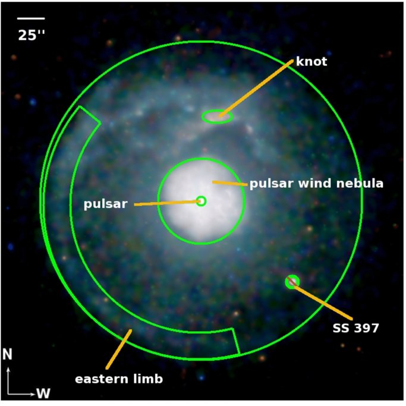
يُعد PWN \pwn مصدرًا ساطعًا باعثًا للأشعة السينية ومناسبًا تمامًا للنمذجة، إذ رُصد بكثير من التلسكوبات عبر الطيف الكهرومغناطيسي. وقد اكتُشف أولًا في 1970 (Altenhoff et al. 1970; Wilson and Altenhoff 1970) في النطاق الراديوي، ثم رُصد لاحقًا في نطاق الأشعة السينية في 1981 (Becker and Szymkowiak, 1981). واكتُشف نبّاضه المركزي J18331034 في 2006 (Camilo et al., 2006)، وتوحي دورته المقاسة ومشتق الدورة بلمعان عالٍ لفقدان الدوران وبعمر مميز منخفض. وبصفته PWN ذا مورفولوجيا دائرية (الشكل 1) مرتبطًا بنبّاض فتي ( سنة)، فإن \pwn ملائم لتحليل يستخدم نماذج “أحادية المنطقة” (مثلًا Reynolds and Chevalier 1984؛ انظر Gelfand 2017 لمراجعة حديثة).
غير أن المحاولات السابقة لنمذجة هذا النظام لم تنجح في إعادة إنتاج الطيف الراديوي وطيف الأشعة السينية في آن واحد (Tanaka and Takahara, 2011; Torres et al., 2014; Hitomi Collaboration et al., 2018). وتزداد النمذجة تعقيدًا بسبب القياسات المتباينة لطيف الأشعة السينية لدى ثلاثة مراصد هي ChandraوNuSTARوHitomi (Guest et al., 2019; Nynka et al., 2014; Hitomi Collaboration et al., 2018). ويُعرض أحد هذه الفروق في الجدول 1، حيث تختلف معاملات نموذج قانون القدرة المكسور بين NuSTAR وHitomi. فضلًا عن ذلك، قد يكون انبعاث الأشعة تحت الحمراء (IR) المرصود من هذا المصدر (Gallant and Tuffs, 1999)، والذي كثيرًا ما يُفترض أنه تهيمن عليه الأشعة السنكرترونية من PWN (مثلًا Tanaka and Takahara 2011; Torres et al. 2014; Hitomi Collaboration et al. 2018)، ملوثًا بانبعاث من الغاز والغبار المحيطين. ولمعالجة هذه المسائل أعدنا تحليل أرصاد IR والأشعة السينية الأرشيفية لهذا المصدر.
2 الأرصاد وتحليل البيانات
في هذا القسم نصف تحليلنا للأرصاد الأرشيفية في IR (Herschel, Spitzer §2.1) وفي الأشعة السينية (Chandra §2.2، وNuSTAR §2.3، وHitomi §2.4) لهذا المصدر.
2.1 أرصاد الأشعة تحت الحمراء
رُصد \pwn بمطياف وحدة المجال المتكاملة لكاميرا مصفوفة الكواشف الضوئية (PACS) (Poglitsch et al., 2010) على متن Herschel الفضائي في 2013 أبريل 07. واستُخدم نمط مطيافية المجال لتغطية خطوط الانبعاث [O I] 63.2 m و145.5 µm، و[O III] 88.4 m، و[C II] 157.7 m. ويبلغ مجال الرؤية الكلي لتوجيه IFU واحد ، ويتكوّن من 25 عنصرًا مكانيًا طيفيًا. ولتغطية كامل PWN في \pwn، حصلنا على فسيفساء IFU للمصدر بقياس 2 2، وكذلك رصد خلفية خارج المصدر بتوجيه واحد لكل خط. حُللت مكعبات IFU باستخدام الإصدار 15.0.1 من HIPE (Ott, 2010). وشمل التحليل قصّ حواف الطيف وطرح استمرارية خط الأساس المستحصلة من ملاءمة متعددة حدود من الدرجة 2 عبر المنطقة الطيفية الخالية من الخطوط. وبينما كُشفت خطوط خلفية ضيقة في الطيف المطروح منه خط الأساس والمكامل مكانيًا لتوجيه IFU خارج المصدر، كُشفت خطوط ضيقة وعريضة معًا في مكعبات IFU المتمركزة على PWN. وتمتلك الخطوط العريضة عرضًا كاملًا عند نصف القيمة العظمى (FWHM) قدره 850 لخط [C II] 157.7 m µm و1000 لخط [O I] 63.2 m 63.2 µm، ومن المرجح أنها تنشأ من مادة مقذوفات SN. وبذلك تكون سرعات المقذوفات المقابلة 42575 و50020 لخطّي [C II] 157.7 m و[O I] 63.2 m، على التوالي. فإذا كان الانبعاث الخطي المرصود ينشأ في الغالب من مقذوفات ذات سرعة مماسية منخفضة، فإن سرعة التمدد المقاسة من الخطوط تمثل حدًا أدنى للسرعة الحقيقية، التي قد تكون أعلى حتى بعامل قدره اثنان، معطيةً مجال سرعة تمدد بين 350 و1000 . وفي صدمة إشعاعية، يُرجح أن الانبعاث الذي نرصده ينشأ من المادة الأعلى كثافة عند عدم الاستمرارية التلامسية، وفي هذه الحالة تمثل السرعة المرصودة سرعة تمدد PWN لا سرعة التمدد الحر للمقذوفات. غير أنه، بما أن سرعات الصدمة التي تنتج خطوط IR منخفضة نسبيًا، فإن سرعة التمدد الحر لمادة المقذوفات عند حد PWN تقع ضمن مجال مشابه.
أنتجنا خرائط خطوط الانبعاث لخطّي مقذوفات [O I] 63.2 m و[C II] 157.7 m بتكامل الأطياف عبر مكوّن الخط العريض، مع استبعاد الخط الضيق الناشئ من انبعاث الخلفية. وتُعرض الخرائط في الشكل 2 مع تراكب خطوط كنتورية للأشعة السينية من PWN باللون الأبيض.
قُدرت كثافات فيض IR الكلية لمنطقة PWN في \pwn من الصور المتحصّل عليها بكاميرا المصفوفة تحت الحمراء (IRAC) والمقياس الضوئي للتصوير متعدد النطاقات (MIPS) على متن Spitzer (PID 3647، PI: Slane)، ومن أداتي كاميرا ومطياف مصفوفة الكواشف الضوئية (PACS) ومستقبِل التصوير الطيفي والضوئي (SPIRE) على متن Herschel (Obs ID 1342218642)، ضمن مجال أطوال موجية بين 3.6 و500 µm. وبالنسبة إلى صور MIPS وPACS وSPIRE، استخرجنا كثافات الفيض الكلية باستخدام فتحة متمركزة على PWN بنصف قطر 41.5″ وحلقة خلفية بنصفي قطر داخلي وخارجي 41.5″ و74.0″، على التوالي. وتُعرض صور IR وفتحة الاستخراج في الشكل 3، وتُدرج كثافات الفيض الكلية في الجدول 2. تهيمن لايقينيات انبعاث الخلفية المحلية في هذه الحالة على لايقينيات كثافات الفيض. وتُظهر صور IRAC انبعاثًا خافتًا جدًا من PWN، متراكبًا على حقل نجمي كثيف. ولإجراء تقدير تقريبي لانبعاث PWN في نطاقات IRAC، قدّرنا السطوع السطحي في منطقة صغيرة جدًا خالية من المصادر النجمية وافترضنا أن هذا السطوع السطحي ثابت عبر كامل مساحة PWN. وتبلغ قيم السطوع السطحي المقدرة بعد طرح الخلفية عند 3.6 و4.5 و5.8 و8.0 µm مقدار 0.33 و0.37 و1.6 و4.0 MJy/sr. وقُدرت كثافات الفيض الكلية بالضرب في مساحة PWN مقدارها ستراديان.
Instrument Wavelength Total Flux Density PWN Flux density Residual Flux Density Variable Variable (µm) (Jy) (Jy) (Jy) (Jy) (Jy) SPIRE 500 1.00.2 0.64 0.67 0.36 0.33 SPIRE 350 1.20.2 0.48 0.50 0.72 0.70 SPIRE 250 1.60.2 0.35 0.37 1.25 1.23 PACS 160 3.71.0 0.21 0.22 3.49 3.48 PACS 70 3.41.5 0.11 0.11 3.29 3.29 MIPS 24 0.220.03 0.037 0.039 0.183 0.181 IRAC 8.0 0.33 0.014 0.015 0.316 0.315 IRAC 5.8 0.13 0.011 0.011 0.119 0.119 IRAC 4.5 0.031 0.009 0.009 0.022 0.022 IRAC 3.6 0.027 0.007 0.008 0.020 0.019
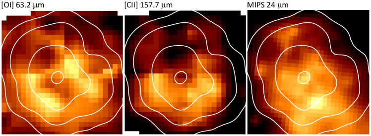
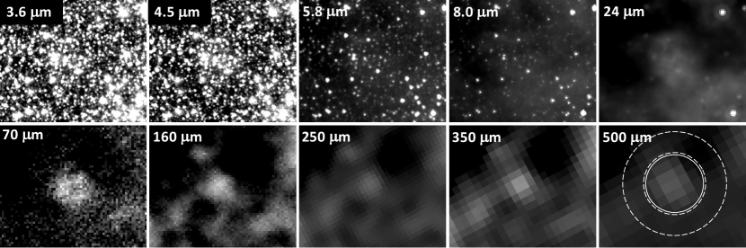
2.2 أرصاد Chandra
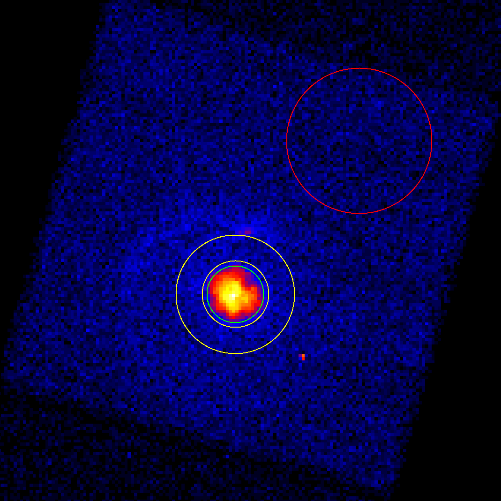
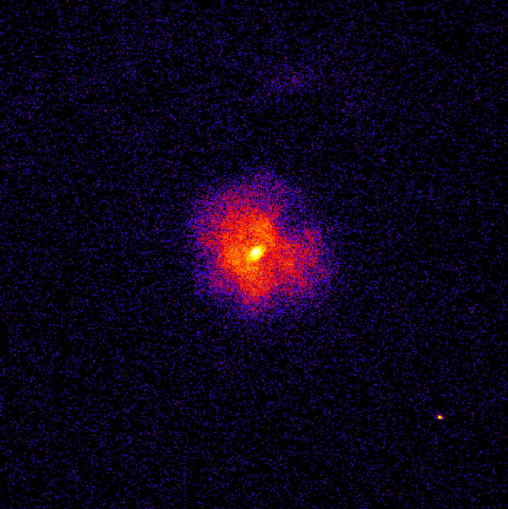
رصد Chandra بانتظام \pwn بكلٍّ من مطياف التصوير CCD المتقدم (ACIS) والكاميرا عالية الدقة (HRC). وفي هذه الدراسة أعدنا تحليل أرصاد ACIS-S التي وقع فيها \pwn على الشريحة S3، وهي الشريحة المضاءة خلفيًا التي توفر أفضل تصوير ودقة طاقية. وتمتلك شريحة ACIS واحدة مجال رؤية قدره مع دقة تصوير قدرها عبر مجال الطاقة 0.2–10 keV.
تشمل البرمجيات المستخدمة في هذا التحليل الإصدار 4.10 من CIAO (Fruscione et al., 2006) وإصدار Sherpa المرافق له (Freeman et al., 2001; Doe et al., 2007)، وكذلك الإصدار 7.6 من SAOImage DS9 (Joye and Mandel, 2003; Smithsonian Astrophysical Observatory, 2000).
بعد الاستعلام عن 16 من أرصاد ACIS-S التي وقع فيها \pwn على الشريحة S3 وتنزيلها من أرشيف بيانات Chandra، حُذفت ملفات المصفوفة الفرعية المسببة للأخطاء (ObsIDs 1554 و3693 و10646 و14263 و16420).
بعد تحليل كل رصد على حدة، وجدنا أن نتائج ObsIDs 1230 و159 انحرفت كثيرًا عن نتائج جميع ObsIDs الأخرى. وبالتحقق، عُزي هذا التباين إلى أن هذه الأرصاد أُخذت عند درجتي حرارة للمستوى البؤري قدرها -C، مقارنة بدرجات حرارة -C أو -C للمستوى البؤري في جميع الأرصاد الأخرى. وتنخفض دقة تصحيح الكسب المعتمد على درجة الحرارة عند درجات حرارة دون -C، لذلك عُدّ ObsIDs 1230 و159 دافئين أكثر من اللازم لتقديم نتائج طيفية موثوقة.
استُخرجت الأطياف من تكديس جميع الأرصاد المتبقية البالغ عددها 11، الملخصة في الجدول 3، عبر نطاق الطاقة 0.5-8 keV باستخدام أداة CIAO المسماة specextract. واستُخرجت هذه الأطياف باستخدام منطقة دائرية بنصف قطر تغطي كامل PWN المركزي كما هو مبين في الشكل 4.
| ObsID | Start Time | Data Mode | Exposure [s] |
|---|---|---|---|
| 1433 | 1999-11-15 22:31:18 | FAINT | 14970 |
| 1717 | 2000-05-23 09:24:15 | FAINT | 7540 |
| 1770 | 2000-07-05 03:42:36 | FAINT | 7220 |
| 1838 | 2000-09-02 01:09:11 | FAINT | 7850 |
| 2873 | 2002-09-14 01:09:17 | FAINT | 9830 |
| 3700 | 2003-11-09 12:20:43 | VFAINT | 9540 |
| 5159 | 2004-10-27 13:32:57 | VFAINT | 9830 |
| 5166 | 2004-03-14 22:12:41 | VFAINT | 10020 |
| 6071 | 2005-02-26 09:08:53 | VFAINT | 9640 |
| 6741 | 2006-02-22 02:57:52 | VFAINT | 9830 |
| 8372 | 2007-05-25 12:06:03 | VFAINT | 10010 |
2.3 أرصاد NuSTAR واختزال البيانات
مصفوفة التلسكوبات الطيفية النووية (NuSTAR) مرصد فضائي للأشعة السينية عالية الطاقة (3-79 keV)، يتألف من تلسكوبين متحاذيين مزودين بكواشف موضوعة عند كل من وحدتي المستوى البؤري لهما (يشار إليهما بـ FPMA وFPMB) (Harrison et al., 2013). ولكل تلسكوب من NuSTAR مجال رؤية قدره ، مع عرض كامل عند نصف القيمة العظمى (FWHM) قدره وقطر نصف القدرة (HPD) قدره . وتبلغ الدقة الطيفية FWHM مقدار 400 eV عند 10 keV. رصد NuSTAR المصدر \pwn في تسع مناسبات منفصلة بإجمالي 383 ks على كل من كاشفي FPM الموجودين على متنه (انظر الجدول 4). ومن بين الأرصاد التسعة، أُخذ رصدان منها (ObsID 10002014001، 40001016001) في نمط المركبة الفضائية STELLAR، مما يجعلهما غير مناسبين للأرصاد العلمية بسبب مناورة دحرجة المركبة الفضائية بمقدار 1 deg/day كما ذُكر في الفهرس الرئيسي لـ NuSTAR11 1 https://heasarc.gsfc.nasa.gov/W3Browse/nustar/numaster.html. لذلك لم نحلل هذين الرصدين. إضافة إلى ذلك، وبسبب قصر زمن التعرض الفعال لـ ObsID 10002014006، لم نحلل هذا الرصد. ومن الأرصاد الستة المتبقية، حللت الورقة السابقة (Nynka et al., 2014) أربعة أرصاد (ObsID 10002014003، 10002014004، 40001016002، 40001016003) بإجمالي 190 ks، لكنها لم تحلل رصدين (ObsID 10002014002، 10002014005) كانا سيضيفان 178 ks إضافية. وقد حللنا ستة أرصاد، بما في ذلك الرصدان اللذان لم يُحللا سابقًا، بإجمالي زمن تعرض قدره 368 ks على كل FPM. وبما أن كل رصد أُجري بكلا الكاشفين على NuSTAR، فقد حللنا ما مجموعه اثنتي عشرة مجموعة بيانات.
اتبعت جميع مجموعات البيانات الاثنتي عشرة معالجة المسار القياسي (HEASoft v6.24 (NASA High Energy Astrophysics Science Archive Research Center (HEASARC), 2014) وNuSTARDAS v1.80) كما هو موضح في دليل برمجيات تحليل بيانات NuSTAR22 2 https://heasarc.gsfc.nasa.gov/docs/nustar/analysis/nustar_swguide.pdf قبل الملاءمة الطيفية. وشغّلنا سكربت المعالجة nupipeline (v0.4.6) بالخيارات الافتراضية لإنتاج ملفات الأحداث المنظفة والمعايرة، المشار إليها في الدليل باسم “منتجات بيانات المستوى 2”. ولا يطبّق خيار المسار الافتراضي أي ترشيح لشذوذ جنوب الأطلسي (SAA) (المنجز عبر الأمر nucalcsaa). ومع أن مرشح SAA قد يكون مطلوبًا للمصادر الأخفت، فإن \pwn مصدر ساطع نسبيًا (1 عدد في الثانية)، ومن ثم فالأرجح أنه لا حاجة إلى ترشيح SAA، كما هو مذكور في موقع NuSTAR الرسمي (ترشيح الخلفية33 3 https://www.nustar.caltech.edu/page/background).
بعد إنشاء ملفات الأحداث المنظفة والمعايرة، ولّدنا ملفات مصفوفة إعادة التوزيع/الاستجابة (RMF) والاستجابة المساعدة (ARF) المرتبطة بها بتشغيل nuproducts (v0.3.3) مع الخيار extended=yes. ويعد الخيار extended=yes ضروريًا لتوليد ARF الملائم لمصدر ممتد.
استُخرجت أطياف المصدر باستخدام منطقة دائرية بنصف قطر متمركزة على PWN، واستُخرجت أطياف الخلفية باستخدام منطقتين مستطيلتين بعيدتين عن المصدر الشكل 5. وقد تُدخل طريقة استخراج الخلفية التقليدية هذه لايقينيات/تقلبات صغيرة في الخلفية، إذ من المعروف أن خلفية NuSTAR غير منتظمة عبر مجال رؤيته (Wik et al., 2014). غير أنه، بما أن \pwn أسطع من الخلفية بنحو 10 مرة في معظم مجال الطاقة الذي نجري فيه الملاءمة الطيفية، فينبغي أن تكون لايقينيات الخلفية هذه مهملة. ولا نرى أيضًا أي انبعاث ضوء شارد من مصادر أشعة سينية ساطعة مجاورة في مجال الرؤية قد يساهم في الخلفية أثناء أي من الأرصاد. وقد أكدنا أن الضوء الشارد لا يمثل مشكلة أثناء أرصاد هذا المصدر باستخدام صفحة فحص قيود NuSTAR التابعة لمركز العمليات العلمية لـ NuSTAR44 4 http://www.srl.caltech.edu/NuSTAR_Public/NuSTAROperationSite/CheckConstraint.php.
| ObsID | Start Time | Obs Type | Spacecraft Mode | Exposure A [s] | Exposure B [s] |
|---|---|---|---|---|---|
| 10002014001 | 2012-07-27 14:36:07 | CAL | STELLAR | 12990 | 13003 |
| 10002014002 | 2012-07-28 01:01:07 | CAL | INERTIAL | 44456 | 44447 |
| 10002014003 | 2012-07-29 01:21:07 | CAL | INERTIAL | 44723 | 44722 |
| 10002014004 | 2012-07-30 01:33:37 | CAL | INERTIAL | 28023 | 28011 |
| 10002014005 | 2012-07-31 19:38:33 | CAL | INERTIAL | 133782 | 133760 |
| 10002014006 | 2012-08-03 20:51:07 | CAL | INERTIAL | 1944 | 1956 |
| 40001016001 | 2013-02-26 05:31:07 | SNR | STELLAR | 50 | 50 |
| 40001016002 | 2013-02-26 05:56:07 | SNR | INERTIAL | 29704 | 29679 |
| 40001016003 | 2013-02-26 22:11:07 | SNR | INERTIAL | 87721 | 87646 |
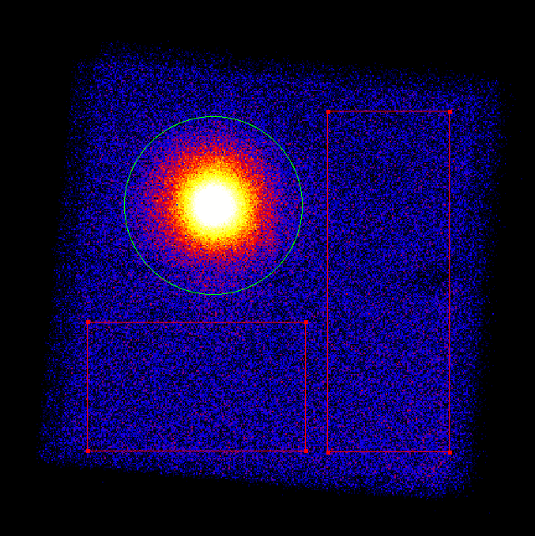
2.4 أرصاد Hitomi واختزال البيانات
خلال عمر مهمته، رصد مرصد الأشعة السينية Hitomi (Takahashi et al., 2016) PWN \pwn بوصفه جزءًا من مرحلة التشغيل والتحقق، تحت معرفات الرصد 100050010 - 100050040 بين 2016 مارس 19-23. سُجلت البيانات في الأدوات الأربع جميعها: مصور الأشعة السينية اللينة (SXI)، ومطياف الأشعة السينية اللينة (SXS)، ومصور الأشعة السينية الصلبة (HXI)، وكاشف أشعة غاما اللينة (SGD). غير أنه خلال جولة الرصد هذه انخفضت المساحة الفعالة لـ SXS، وكان كاشفا SGD إما في مرحلة التشغيل الأولي أو لم تكن تُسجّل أي بيانات (Hitomi Collaboration et al., 2018). لذلك لا ندرج أرصاد هذه الأدوات في تحليلنا. ونقدم هنا إعادة معالجة وإعادة تحليل البيانات المتحصّل عليها باستخدام SXI وكلا كاشفي HXI في مجال الطاقة keV.
أُجري اختزال البيانات باتباع دليل تحليل Hitomi خطوة بخطوة، الإصدار 6.1، وباستخدام برمجيات Hitomi الإصدار 6، كما أُدمجت في الإصدار 6.26.1 من أدوات HEAsoft55 5 https://heasarc.gsfc.nasa.gov/docs/hitomi/analysis/. طُبقت أدوات المعايرة المحدّثة باستخدام الإصدار 10 من CALDB الخاص بـ Hitomi، الصادر في 15 فبراير 2018. وبدقة زاوية قدرها ′ لكواشف HXI و′ لكاشف SXI (Takahashi et al., 2014)، لا يكون PWN \pwn محلولًا مكانيًا، ومن ثم حُلّل أماميًا كمصدر نقطي. عوملت كواشف HXI كأدوات مستقلة وحُللت البيانات كلٌّ على حدة. ودُمجت ملفات الأحداث لكاشفي HXI1 وHXI2 قبل اختيار المصدر والخلفية. وفُحصت مناطق المصدر والخلفية (خارج المصدر)، كما يوفرها دليل التحليل، وطُبقت على البيانات. ومع أن دليل تحليل Hitomi يذكر أن طيف الخلفية خارج المصدر قد يظل محتويًا على بعض انبعاث المصدر، مما يؤثر في الفيض المستمد، لا يتوفر طيف خلفية غير أشعة سينية (NXB)، فيبقى استخراج خلفية خارج المصدر هو الحل الوحيد. وتتألف منطقة الخلفية هذه من كامل مجال الرؤية مطروحًا منه منطقة المصدر. ولم تُدمج بيانات أحداث SXI قبل الاختزال اللاحق لأن فريق Hitomi يلاحظ في دليل التحليل أن تأثير صدى الأشعة الكونية يختلف بين ObsIDs، ولذلك ينبغي إنشاء ملفات RMF وARF منفصلة. وبناءً على ذلك، اختُزلت البيانات فرادى، إذ لم تُختر إلا الأحداث المكتشفة خلال أوقات غير “minus-Z day earth (MZDYE)” لاستبعاد الأحداث المتأثرة بتسرب الضوء (Nakajima et al., 2018). ثم جُمعت الأطياف والاستجابات باستخدام أداة ftool addascaspec. وعلى غرار كواشف HXI، فُحصت مناطق المصدر والخلفية لأرصاد SXI كما وفرها دليل التحليل وطُبقت على البيانات. ويعني ذلك لهذا الكاشف كامل مجال الرؤية، مع استبعاد مصادر المعايرة وشرائط قراءتها، وبعض المصادر النقطية، والمصدر العلمي.
3 التحليل الطيفي للأشعة السينية
بما أن المصدر SNR مركّب، فإن طيف الأشعة السينية لـ PWN متراكب على الانبعاث الناشئ من SNR والنبّاض المركزي. ولا يستطيع سوى Chandra، بدقته الزاوية الفائقة، أن يميز مكانيًا الانبعاث القادم من كل مكوّن (انظر الشكل 1). وقد حلل Guest et al. (2019) مؤخرًا جميع بيانات Chandra لهذا المصدر لوصف طيف كل بنية فرعية في البقية. وللحصول على طيف الأشعة السينية لـ PWN المرصود بـ NuSTAR وHitomi، ندرج لذلك المعاملات المستحصلة لكل بنية فرعية رُصدت بـ Chandra (انظر الجدول 5)، مما يترك لنا طيف PWN “النقي”. نقدم هنا أولًا التحليل العام للأشعة السينية المنجز على جميع البيانات، ثم نعرض النتائج.
| Northern knot | |
|---|---|
| Photon Index () | 2.24 |
| Normalization | |
| Eastern Limb | |
| Photon Index () | 2.22 |
| Normalization | |
| PSR J (without Black body) | |
| Photon Index () | 1.54 |
| Normalization | |
| PSR J (with Black body) | |
| Photon Index () | 1.35 |
| Normalization | |
| kT (keV) | 0.43 |
| Normalization (BB) | |
3.1 إجراء ملاءمة الأشعة السينية
بعد استخراج المصدر، جُمّع كل طيف إلى 20 عدًّا في كل حاوية في مجال الطاقة المنخفضة ( 20 keV)، وإلى 100 عدًّا في كل حاوية عند الطاقات الأعلى ( 20 keV). ولم يؤثر رفع الحد الأدنى للتجميع من 20 إلى 100 عدًّا لكل حاوية عند الطاقات الأعلى في معاملات الملاءمة، بسبب متانة إحصاء في التعامل مع الحاويات التي تحتوي على أعداد قليلة (Cash, 1979). ثم حُللت الأطياف المصححة للخلفية ولاستجابة الأداة باستخدام XSPEC v12.10.1m (Arnaud, 1996).
للحصول على طيف PWN من أطياف NuSTAR وHitomi، لاءمنا طيف المصدر مع تضمين معاملات أفضل ملاءمة للبنى الفرعية في \pwn، كما أوردها Guest et al. (2019). وتتكون هذه المكونات من النبّاض المركزي PSR J18331034، والحافة الشرقية المضاءة طرفيًا من البقية، والعقدة الشمالية (انظر الجدول 5 للمعاملات الطيفية لهذه المكونات). وبما أن منطقة المصدر لأطياف Chandra لا تشمل إلا النبّاض وPWN، لم تكن هناك حاجة إلى مكوّني الحافة الشرقية والعقدة الشمالية. وبالنسبة إلى المصدر ككل، وُجد أن كثافة عمود الهيدروجين تبلغ cm-2 (Guest et al., 2019).
عند ملاءمة مكوّن النبّاض، وجد Guest et al. (2019) تحسنًا في إحصاءات الملاءمة عندما أدرجوا مكوّن جسم أسود bbody في طيف قانون القدرة للنبّاض. ولكن بما أن هذا التحسن هامشي، لاءمنا طيف PWN مع تضمين مكوّن الجسم الأسود للنبّاض ومن دونه.
بعد تثبيت المكونات المذكورة أعلاه، لُوئم طيف PWN بوصفه pegpwrlw بحيث يبقى دليل الفوتونات () والتطبيع حرّين. واخترنا نموذج قانون القدرة pegpwrlw بدل نموذج قانون القدرة الاعتيادي لأنه يخفف مشكلة الارتباط القوي بين دليل الفوتونات والتطبيع، وذلك باستخدام الفيض غير الممتص بين نطاقي طاقة محددين بوصفه تطبيعًا له (Yang et al., 2016). وعولج الامتصاص باستخدام نموذج امتصاص الوسط بين النجمي Tuebingen-Bolder، المدمج في XSPEC كإجراء tbabs، مع ضبط الوفرة الشمسية على wilms (Wilms et al., 2000). وكما ذُكر في بداية هذا القسم الفرعي، ضبطنا إحصاء الملاءمة على cstat.
للحصول على لايقينيات معاملات الملاءمة (دليل الفوتونات والتطبيع)، اخترنا استخدام طريقة مونت كارلو بسلاسل ماركوف (MCMC) في XSPEC. واتبعنا مثال XSPEC لاستخدام خوارزمية Goodman-Weare (Goodman and Weare, 2010) مع 8 سالكًا وطول سلسلة قدره 10,000 خطوة.
3.2 ملاءمات قوانين القدرة القطعية
تتنبأ النماذج النظرية للتطور الإشعاعي لـ PWN (Gelfand et al. (2009)، Torres et al. (2014)) بأن الطيف الناتج ينحني بسلاسة في نطاق موجات الأشعة السينية. وعليه، فمع أن قانون القدرة المكسور المستخدم عادة لوصف هذا الانحناء يؤدي أداءً معقولًا في تحديد نقطة الانعطاف في الطيف، فإنه غير محفز فيزيائيًا. إضافة إلى ذلك، فإن موضع هذا “الكسر” شديد الحساسية لحدود مجال الطاقة المرصود. ويتضح هذا الأثر في تحليل PWN \pwn، حيث تبلّغ مراصد الأشعة السينية المختلفة، التي تغطي مجالات طاقة مختلفة، عن طاقات كسر مختلفة (انظر الجدول 1). ولاستكشاف هذا الانحناء على نحو أفضل (أي تغير دليل الفوتونات عبر نطاق الأشعة السينية)، نقترح ملاءمة طيف PWN باستخدام قوانين قدرة قطعية بدل قانون القدرة المكسور القياسي. وفي هذا النهج نقسم مجال الطاقة الكلي الذي نلائمه إلى عدة نطاقات طاقة متجاورة ومتصلة. وبما أننا نلائم قانون قدرة في كل نطاق طاقة على حدة، نحصل على مجموعة من المعاملات ولايقينياتها المرتبطة في كل نطاق طاقة. ونرى أنه في غياب نموذج PWN يستطيع توصيف الطبيعة المنحنية بسلاسة للطيف بدقة، فإن بحث تغير معاملات قانون القدرة عبر نطاقات طاقة متميزة باستخدام نهج قانون القدرة القطعي هو نهج صالح ومفيد.
نتناول ملاءمة قانون القدرة القطعي باختيار نطاقات طاقة متساوية تقريبًا في الفضاء اللوغاريتمي، وتحتوي على عدد كافٍ من العدّات، ومحددة بحيث تكون المقارنة بين الأدوات ممكنة. وننتهي إلى نطاقات الطاقة: 0.8–3.0 keV (حيث يتداخل Chandra وSXI في Hitomi)، و3.0–8.0 keV (حيث تتداخل كواشف Chandra وSXI في Hitomi وNuSTAR)، و8–20 keV (حيث تتداخل كواشف NuSTAR وHXI في Hitomi)، و20–45 keV (حيث تتداخل NuSTAR وكواشف HXI في Hitomi).
لُوئمت بيانات Chandra في نطاقي الطاقة 0.8–3.0 و3.0–8.0 keV. ويُعرض طيف أطول رصد في الشكل 7.
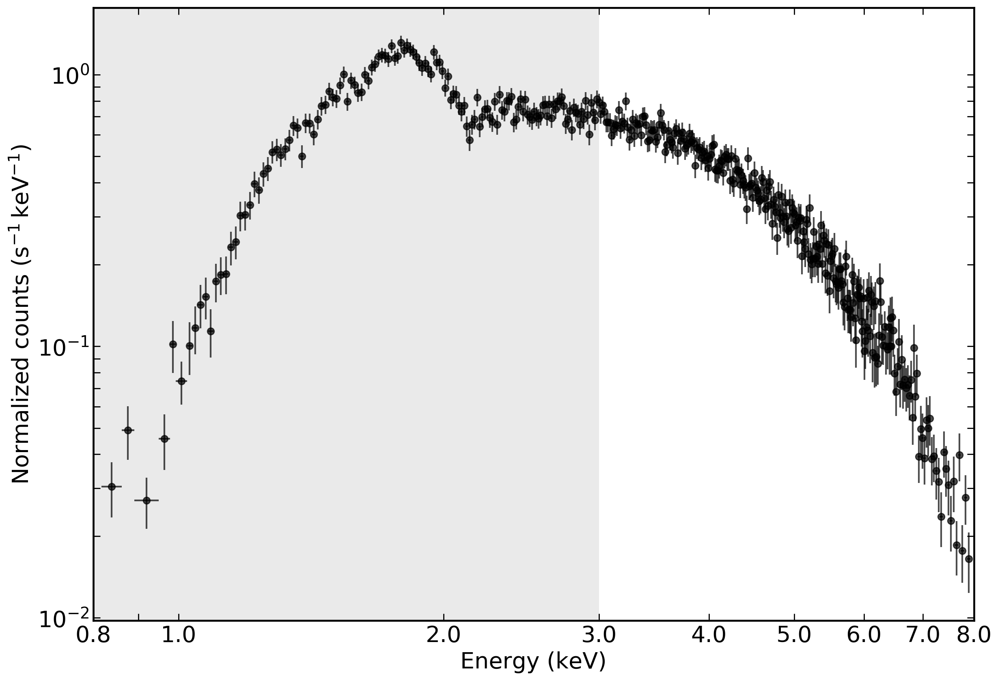
لُوئمت بيانات NuSTAR في نطاقات الطاقة 3.0–8.0 keV و8–20 keV و20–45 keV. ومع أن NuSTAR يعمل في مجال 3–79 keV، فقد حُصرت الملاءمة الطيفية لهذا المصدر في مجال 3–45 keV لأن الخلفية تهيمن فوق 45 keV. إضافة إلى ذلك، لُوئمت الأطياف من FPMA وFPMB على حدة، إذ لاحظنا فرقًا ثابتًا في معاملات الملاءمة عند إجراء ملاءات لكل طيف بصورة مستقلة. وعلى وجه التحديد، رأينا أن دليل الفوتونات أعلى في أطياف FPMA مقارنة بأطياف FPMB، وأن الفيض غير الممتص أعلى باستمرار في أطياف FPMB مقارنة بأطياف FPMA. ويوصف هذا التباين بين أطياف FPMA وFPMB في الملحق A. ولا ترتبط هذه المسألة بالتباين الناجم عن تمزق الغطاء الحراري لكاشف FPMA، الذي يسبب فائضًا في الفوتونات منخفضة الطاقة (Madsen et al., 2020)، لأن فريق NuSTAR يعتقد أن التمزق بدأ في 2017، وجميع الأرصاد المحللة في هذه الدراسة مأخوذة من 2012 و2013 (الجدول 4). وتُعرض أطياف أطول رصد في الشكل 8.
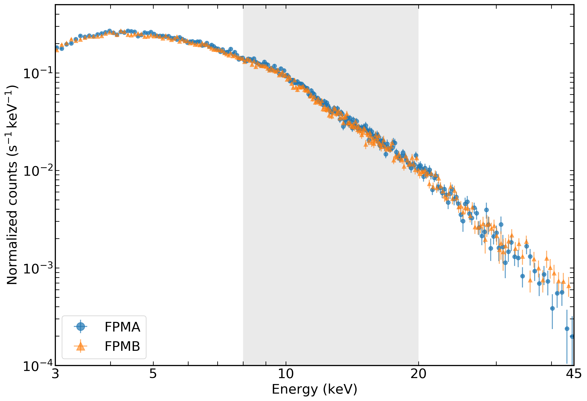
تمتد البيانات المسجلة بواسطة Hitomi عبر مجال الطاقة المشترك لأرصاد Chandra وNuSTAR. لذلك لُوئمت بيانات Hitomi على جميع نطاقات الطاقة المحددة. وبما أن مجال الطاقة الكامل لـ Hitomi موزع على نوعين مختلفين من الكواشف، فإننا نورد نتائج كل نطاق طاقة للكاشف المعني الحساس لتلك الطاقات (انظر الجداول 6 و7 و8 و 9). وتُعرض الأطياف المرصودة في الشكل 9، حيث يُشار إلى طيف الكاشف ذي الصلة بكل نطاق طاقة.
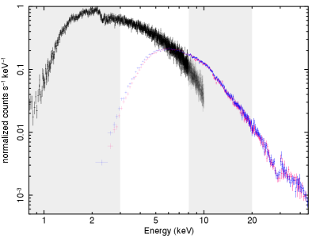
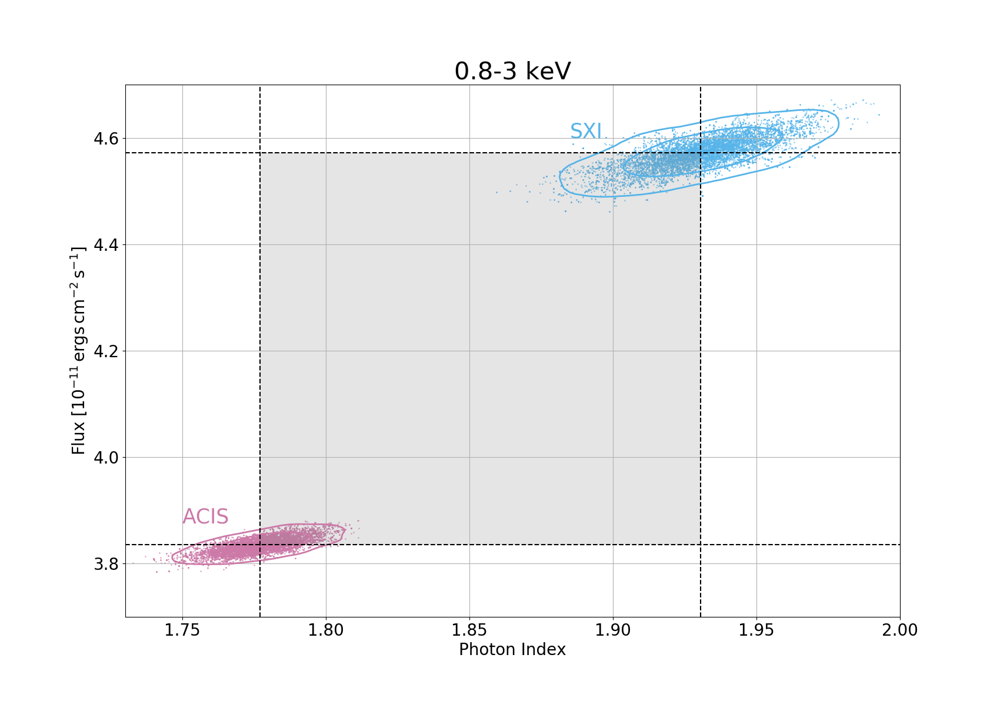
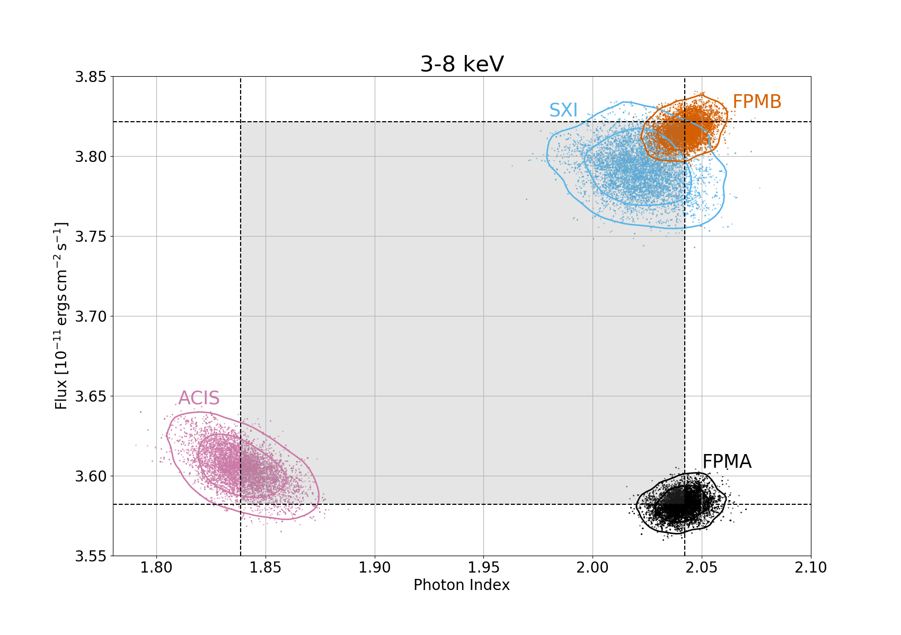
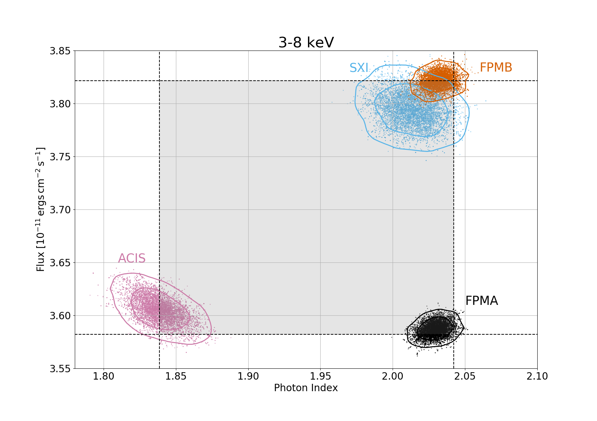
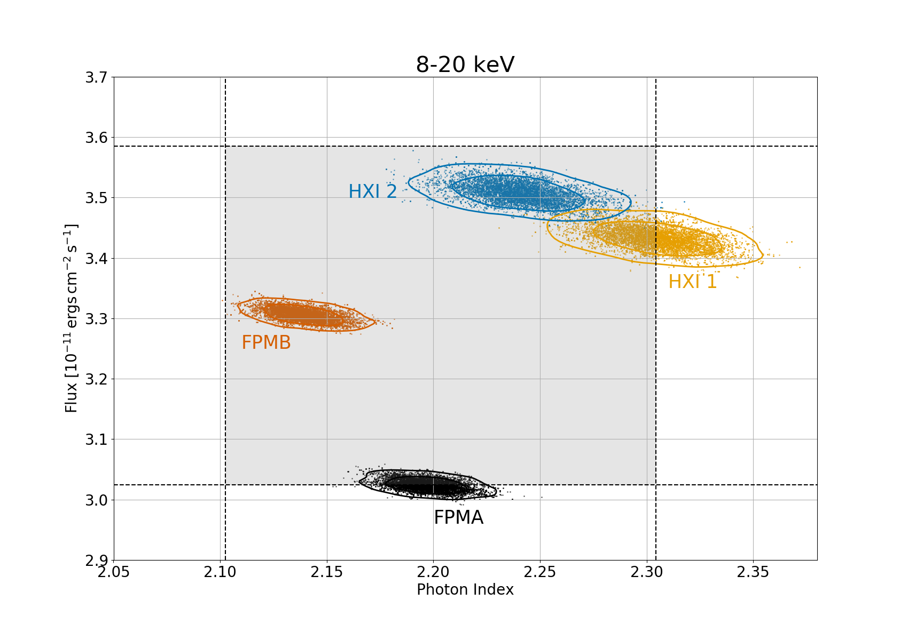
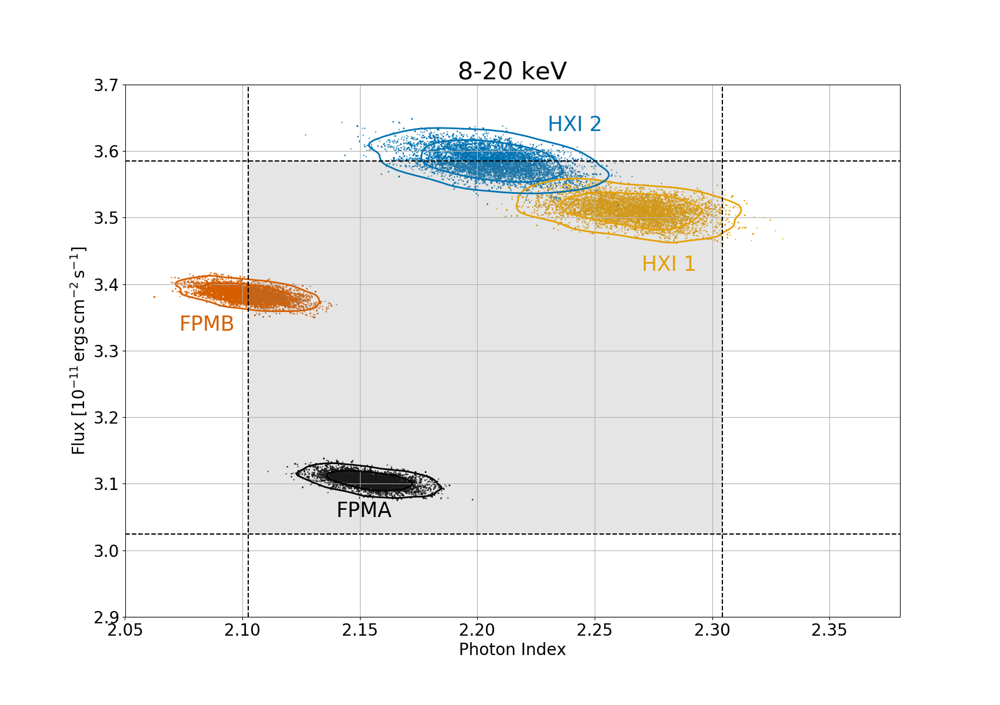
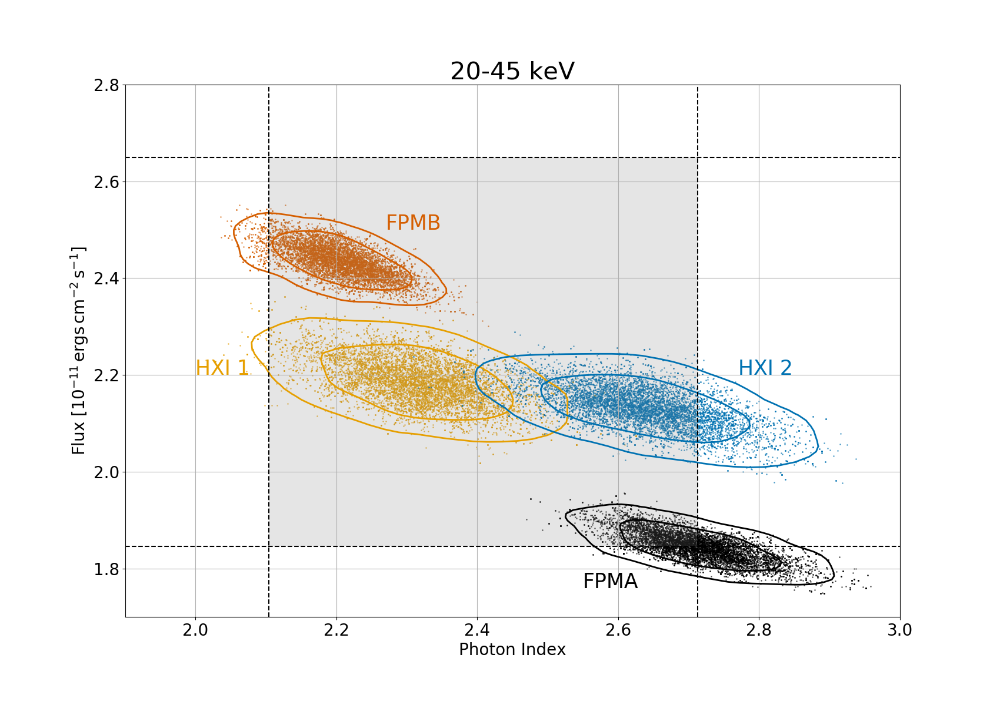
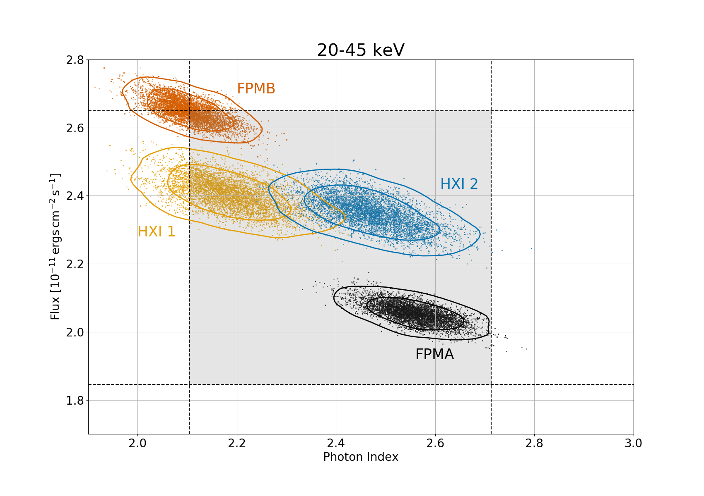
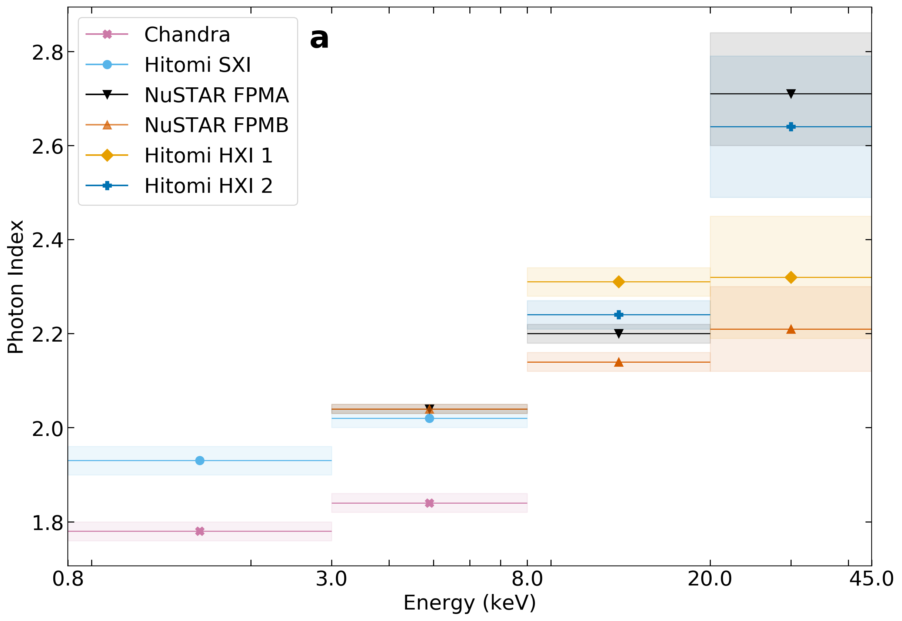
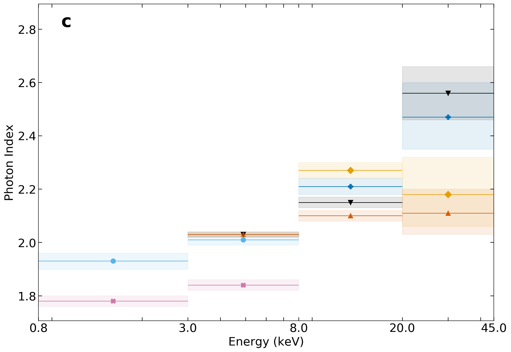
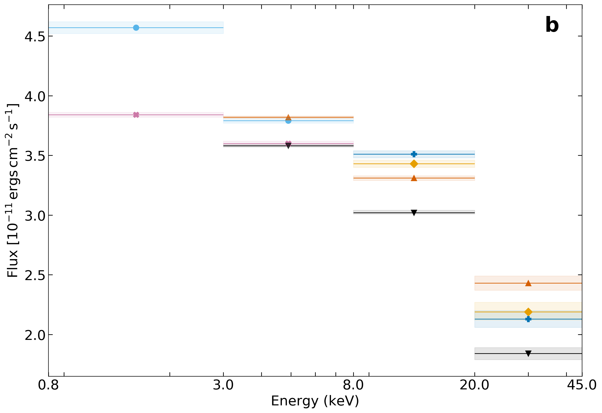
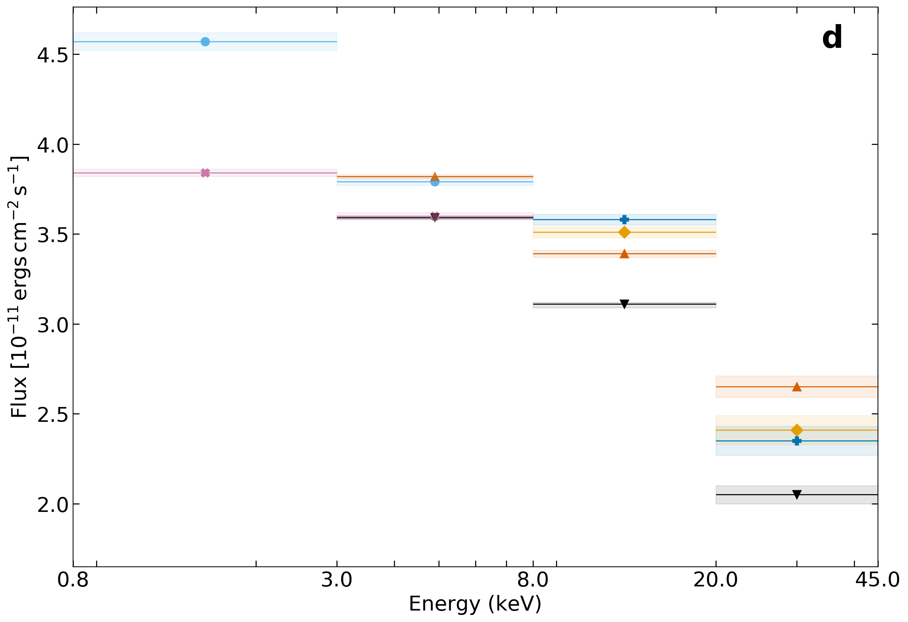
| Energy Range [keV] | Chandra | Hitomi SXI | Hitomi HXI 1 | Hitomi HXI 2 | NuSTAR FPMA | NuSTAR FPMB |
| 0.8 – 3.0 | – | – | – | – | ||
| 3–8 | – | – | ||||
| 8–20 | – | – | ||||
| 20–45 | – | – |
| Energy Range [keV] | Chandra | Hitomi SXI | Hitomi HXI 1 | Hitomi HXI 2 | NuSTAR FPMA | NuSTAR FPMB |
|---|---|---|---|---|---|---|
| 0.8–3.0 | – | – | – | – | ||
| 3–8 | – | – | ||||
| 8–20 | – | |||||
| 20–45 | – |
| Energy Range [keV] | Chandra | Hitomi SXI | Hitomi HXI 1 | Hitomi HXI 2 | NuSTAR FPMA | NuSTAR FPMB |
| 0.8–3.0 | – | – | – | – | ||
| 3–8 | – | – | ||||
| 8–20 | – | – | ||||
| 20–45 | – | – |
| Energy Range [keV] | Chandra | Hitomi SXI | Hitomi HXI 1 | Hitomi HXI 2 | NuSTAR FPMA | NuSTAR FPMB |
| 0.8–3.0 | – | – | – | – | ||
| 3–8 | – | – | ||||
| 8–20 | – | – | ||||
| 20–45 | – | – |
3.3 النتائج
كما ذُكر في 3.1، لاءمنا نموذجين مختلفين لأطياف الأشعة السينية: أحدهما يضم مكوّن جسم أسود للنبّاض، والآخر من دون مكوّن جسم أسود للنبّاض. نعرض نتائج ملاءمات معاملات دليل الفوتونات والتطبيع (أي الفيض غير الممتص) لأطياف PWN في الشكل 10؛ والجداول 6 و7 و8 و9؛ والشكل 11. والشكل 10 هو مجموعة من مخططات التبعثر التي تعرض عينات MCMC. وتشير الكنتورات إلى مناطق تحتوي على 68% و95% من العينات، على التوالي. وتُجدول النتائج أيضًا في الجداول 6 و7 و8 و9. واللايقينيات في الجداول هي فواصل الثقة أحادية البعد 90%. ويعرض الشكل 11 معاملي الملاءمة منفصلين مع الطاقة على المحور السيني لإبراز الفروق بين نطاقات الطاقة.
كما يبين الجدول 5، يبلغ دليل الفوتونات لمكوّن النبّاض عند تضمين الجسم الأسود، في حين يبلغ عند استبعاد مكوّن الجسم الأسود. وتمثل هذه الزيادة بمقدار في عند استبعاد نموذج الجسم الأسود افتراضًا لطيف ألين لمكوّن النبّاض. وبما أن الطيف الألين لمكوّن النبّاض يعني أن انبعاث النبّاض أكثر تركزًا عند الطاقات المنخفضة ولا يمتد إلى الطاقات الأعلى، تُنسب حصة أكبر من الانبعاث الكلي عند الطاقات الأعلى إلى PWN. وينتج من هذا الأثر طيف أصلب لـ PWN (أي أصغر). ويكون هذا الفرق في لمكوّن PWN بين النموذجين أكبر عند الطاقات الأعلى.
ومع أن دليل الفوتونات من كواشف مختلفة في نطاق الطاقة نفسه لا يتفق بالضرورة (الشكل 10)، فإننا نرى إجمالًا تليّنًا طيفيًا عامًا (أي زيادة في ) عبر نطاقات الطاقة الأربعة (الشكل 11). والاستثناء من هذا الاتجاه هو كاشف HXI 1 في Hitomi عند الملاءمة بالنموذج الذي لا يحتوي على مكوّن الجسم الأسود للنبّاض (الجدول 7) في نطاق 20–45 keV. ولكن، مع أن أفضل دليل فوتونات ملائم يتغير من في نطاق 8–20 keV إلى في نطاق 20–45 keV، فإن اللايقينية في نطاق 20–45 keV كبيرة بما يكفي لجعل التليّن محتملًا.
أما بالنسبة إلى معامل التطبيع (أي الفيض غير الممتص)، فمع أن قيم معامل التطبيع تتناقص لكل كاشف عند الانتقال من نطاقات الطاقة المنخفضة إلى الأعلى، فإن قيم الكواشف المختلفة داخل نطاق الطاقة نفسه تختلف، على غرار دليل الفوتونات.
نناقش بعد ذلك كيف ندرج لايقينيات معاملات الملاءمة، الناتجة من عدم الاتفاق بين الكواشف ومن الاختيار بين تضمين/استبعاد مكوّن الجسم الأسود للنبّاض، في نمذجة PWN.
4 المناقشة
نناقش هنا نتائج نمذجة PWN مع أخذ تحليل IR والأشعة السينية أعلاه في الاعتبار. في §4.1 نناقش الأصل المحتمل لانبعاث IR المرصود. ثم نستخدم هذه المعلومات وتحليلنا المحدث للأشعة السينية لتحديد الخصائص المرصودة التي ينبغي أن يعيد إنتاجها نموذج فيزيائي لتطور PWN داخل SNR. وفي §4.2، نصف نموذجًا تطوريًا كهذا والطريقة التي حددنا بها توليفة معاملات الإدخال التي تعيد إنتاج الخصائص المرصودة لهذا النظام على أفضل وجه. ونناقش كذلك آثار القيم المستمدة لمعاملات النموذج في §4.2، ونستخدمها لتقييد البنى في ISM المحيط اللازمة لإعادة إنتاج مورفولوجية قشرة SNR المحيطة في §4.3.
4.1 انبعاث الأشعة تحت الحمراء
كما ذُكر في §1، لم تستطع المحاولات السابقة لنمذجة انبعاث هذا PWN إعادة إنتاج طيفي IR والأشعة السينية المرصودين في آن واحد بافتراض أن كليهما انبعاث سنكرتروني من PWN (مثلًا Torres et al. 2014; Hitomi Collaboration et al. 2018). ومع أن طيف قانون القدرة لانبعاث الأشعة السينية المستمد في تحليلنا (§3.3) يوحي بقوة بصحة ذلك، فإننا نقيّم أدناه ما إذا كان انبعاث IR هو أيضًا إشعاعًا سنكرترونيًا من لبتونات عالية الطاقة في PWN.
تُدرج كثافات فيض IR الكلية لمنطقة PWN في \pwn في الجدول 2 وتُرسم في الشكل 12. ويعرض الشكل 2 خرائط خطي [O I] 63.2 m و[C II] 157.7 m في اللوحتين اليسرى والوسطى، وكذلك صورة MIPS 24 µm لمنطقة PWN في اللوحة اليمنى للمقارنة. وتسهم هذه الخطوط في الانبعاث الظاهر في صور Herschel PACS عند 70 و160 µm المعروضة في الشكل 3. وبما أن الانبعاث عند 24 µm له مورفولوجيا خيطية مشابهة لخريطة [O I] 63.2 m، فليس من غير المعقول افتراض أن جزءًا مهمًا من الانبعاث المرئي عند 24 µm ينشأ من خطوط مقذوفات O IV أو Fe II الواقعة ضمن مجال الأطوال الموجية لنطاق MIPS.
ونتيجة لذلك، يرجح أن جزءًا كبيرًا من انبعاث IR المكتشف من هذا المصدر ينتجه الغبار والغاز المقيمان في خيوط المقذوفات. ولاستخدام خصائص IR لهذا المصدر في دراسة الغبار والغاز الأعمق داخل SNR، لا بد أولًا من تكميم مساهمة PWN. وغالبًا ما يتم ذلك ببساطة باستقراء ملاءمة قانون قدرة للطيف عند ترددات أعلى (عادةً الأشعة السينية) أو أدنى (راديو GHz) (مثلًا Koo et al. 2016). غير أن النمذجة الموصوفة أدناه في §4.2 قد توفر طريقة أدق لتقدير انبعاث IR السنكرتروني من PWN.
4.2 نمذجة PWN
كما نوقش في §1، توفر خصائص PWN داخل SNR معلومات لا تُقدّر بثمن عن النجم السلف وانفجار المستعر الأعظم، وخصائص ولادة النجم النيوتروني، ومحتوى رياح نبّاضه. وحاليًا، تتمثل إحدى أفضل طرائق الحصول على هذه الخصائص في استخدام نموذج (معتمد على الزمن) لتطور PWN داخل SNR لإعادة إنتاج الخصائص الديناميكية وتوزيع الطاقة الطيفي عريض النطاق (SED) لنظام معين (انظر المراجعتين الحديثتين لـ Gelfand 2017 وSlane 2017 وكذلك المراجع الواردة فيهما). وهنا نستخدم النموذج التطوري الذي وصفه Gelfand et al. (2009) لإعادة إنتاج الخصائص المدرجة في الجدول 10، كما فعلنا سابقًا مع PWNe في G54.1+0.3 (Gelfand et al., 2015)، وHESS J1640465 (Gotthelf et al., 2014)، وKes 75 (Gelfand et al., 2013).
| Property | Observed | “Best Fit” Values | Citation | |
| Variable | ||||
| PSR J18331034 | ||||
| Current spin-down luminosity | Camilo et al. (2006) | |||
| Current characteristic age | 4850 years | Camilo et al. (2006) | ||
| Pulsar Wind Nebula | ||||
| Angular radius | Matheson and Safi-Harb (2010) | |||
| Angular expansion rate | Bietenholz and Bartel (2008) | |||
| 327 MHz Flux Density | Jy | 5.8 Jy | 4.9 Jy | Bietenholz et al. (2011) |
| 1.43 GHz Flux Density | Jy | 7.2 Jy | 6.4 Jy | Bietenholz et al. (2011) |
| 4.8 GHz Flux Density | Jy | 7.5 Jy | 6.9 Jy | Sun et al. (2011) |
| 4.49 – 7.85 GHz Spectral Indexaaيُعرَّف الدليل الطيفي على أنه كثافة فيض . | Bhatnagar et al. (2011) | |||
| 70 GHz Flux Density | Jy | 3.7 Jy | 3.7 Jy | Planck Collaboration et al. (2016) |
| 84.2 GHz Flux Density | Jy | 3.5 Jy | 3.5 Jy | Salter et al. (1989b) |
| 90.7 GHz Flux Density | Jy | 3.2 Jy | 3.3 Jy | Salter et al. (1989a) |
| 94 GHz Flux Density | Jy | 3.2 Jy | 3.3 Jy | Bock et al. (2001) |
| 100 GHz Flux Density | Jy | 3.0 Jy | 3.1 Jy | Planck Collaboration et al. (2016) |
| 141.9 GHz Flux Density | Jy | 2.4 Jy | 2.5 Jy | Salter et al. (1989a) |
| 143 GHz Flux Density | Jy | 2.4 Jy | 2.5 Jy | Planck Collaboration et al. (2016) |
| keV Unabsorbed Flux | Tables 8 & 9 | |||
| keV Photon Index | Tables 6 & 7 | |||
| keV Unabsorbed Flux | Tables 8 & 9 | |||
| keV Photon Index | Tables 6 & 7 | |||
| keV Unabsorbed Flux | Tables 8 & 9 | |||
| keV Photon Index | Tables 6 & 7 | |||
| keV Unabsorbed Flux | Tables 8 & 9 | |||
| keV Photon Index | Tables 6 & 7 | |||
| GeV Photon Flux | Ajello et al. (2017) | |||
| GeV Photon Flux | Ajello et al. (2017) | |||
| GeV Photon Flux | (3) | Ajello et al. (2017) | ||
| TeV Photon Flux | (3) | Ajello et al. (2017) | ||
| TeV Flux | H. E. S. S. Collaboration et al. (2018) | |||
| TeV Photon Index | H. E. S. S. Collaboration et al. (2018) | |||
| Supernova Remnant | ||||
| Angular radius | Guest et al. (2019) | |||
| §2.1 | ||||
| Distance | 4.4 kpc | Ranasinghe and Leahy (2018) | ||
تُدرج معاملات الإدخال لهذا النموذج في الجدول 11. وكما في التحليلات السابقة المذكورة أعلاه، نفترض ما يأتي:
- 1.
-
2.
نفترض أن مقذوفات المستعر الأعظم ذات الكتلة والطاقة الحركية الابتدائية تتمدد في وسط ذي كثافة منتظمة . وكما نوقش في §4.3، توحي مورفولوجيا قشرة SNR في الأشعة السينية بقوة بوجود تعزز في الكثافة شمال موقع الانفجار. غير أن هذا التعزز، لأنه لم يؤثر إلا في جزء صغير من القشرة، ولا يؤثر في نصف قطر SNR المتوسط المستخدم في نمذجتنا، ولم يتسبب في اصطدام صدمة SN العكسية بأي جزء من PWN، فإن أثره في نتائج نمذجتنا ضئيل.
-
3.
نحسب العمر ولمعان فقدان الدوران الابتدائي للنبّاض المرتبط PSR J18331034، من أجل دليل كبح نبّاضي معين (مفترض ثابتًا) وزمن مميز لفقدان الدوران ، باستخدام العمر المميز ولمعان فقدان الدوران الحالي (المعطيين في الجدول 10) المستنتجين من الدورة المقاسة ومشتق الدورة للـ PSR (مثلًا Gelfand et al. 2015):
(1) (2) -
4.
نفترض أن لمعان فقدان الدوران الكامل يُحقن في PWN إما على هيئة حقول مغناطيسية أو طاقة حركية للبتونات النسبية ()، بحيث:
(3) (4) حيث يكون ثابتًا مع الزمن. ومع أن لمعان أشعة النبضية لبعض النبّاضات قد يكون جزءًا مهمًا من ، فإن لمعان أشعة النبضية المرصود لـ PSR J18331034 هو (Abdo et al., 2013).
-
5.
نفترض أن طيف الجسيمات المحقونة في PWN يوصف جيدًا بقانون قدرة مكسور على الصورة:
(7) حيث يُفترض أن المعاملات الحرة الخمسة ( و و و و) في المعادلة 7 ثابتة مع الزمن، ويُحسب التطبيع باشتراط أن:
(8) في جميع الأزمنة .
-
6.
نفترض أن الخسائر الإشعاعية الوحيدة التي تتكبدها الجسيمات المحبوسة داخل PWN ناتجة من الانبعاث السنكرتروني وتشتت كومبتون العكسي (IC). وعند حساب الخسائر السنكرترونية، نفترض أن المجال المغناطيسي لـ PWN له شدة منتظمة (يُحسب تطورها باستخدام الإجراء الذي وصفه Gelfand et al. 2009) وأن زوايا خطوة الجسيمات (أي الزاوية بين سرعتها والمجال المغناطيسي المحلي ) موزعة عشوائيًا. وبالنسبة إلى انبعاث IC، نأخذ في الاعتبار تشتت الجسيمات للفوتونات المنبعثة من الخلفية الكونية الميكروية (درجة الحرارة ؛ Fixsen 2009)، وكذلك حقل خلفية إضافيًا له طيف جسم أسود بدرجة حرارة وتطبيع ، بحيث يكون لهذا الحقل الفوتوني كثافة طاقة:
(9) حيث . ولا نأخذ في الاعتبار انبعاث كومبتون الذاتي السنكرتروني (SSC)، إذ وجدت أعمال نظرية سابقة أن انبعاث SSC لا يسهم إسهامًا مهمًا في إجمالي انبعاث IC إلا في أزمنة مبكرة جدًا (مثلًا Gelfand et al. 2009; Martín et al. 2012).
ولتحويل الكميات الفيزيائية التي يتنبأ بها نموذجنا إلى الخصائص المرصودة لهذا النظام، نفترض مسافة ، وهي القيمة المركزية المستمدة من دراسة حديثة لانبعاث Hi الخاص به ( kpc؛ Ranasinghe and Leahy 2018).
| Model Parameter | Variable | |
|---|---|---|
| Supernova Explosion Energy | ||
| Supernova Ejecta Mass | 11.32 M⊙ | 11.33 M⊙ |
| ISM Density | 0.2 cm-3 | 0.2 cm-3 |
| Pulsar Braking Index | 3.126 | |
| Pulsar Spindown Timescale | 2900 years | 9600 years |
| Wind Magnetization | ||
| Minimum Energy of Injected Leptons | 12.5 GeV | 12.5 GeV |
| Break Energy of Injected Leptons | 1.0 TeV | 1.0 TeV |
| Maximum Energy of Injected Leptons | 0.26 PeV | 0.18 PeV |
| Low-Energy Particle Index | 2.86 | 2.86 |
| High-Energy Particle Index | 2.51 | 2.51 |
| Temperature of External Photon Field | 1700 K | 1700 K |
| Normalization of External Photon Field | ||
| / degrees of freedom | 30 / 16 | 37 / 17 |
استخدمنا خوارزمية Metropolis MCMC (Metropolis 1985؛ انظر §3.2 من Gelfand et al. (2015) لوصف مفصل) لتحديد توليفة معاملات إدخال النموذج 13 المدرجة في الجدول 11 التي تعيد على أفضل وجه إنتاج الخصائص المرصودة 29 لـ \pwn المدرجة في الجدول 10. ويتم ذلك بطريقة تقدير الأرجحية العظمى، حيث نجد التوليفة التي تجعل القيم المتنبأ بها للخصائص المرصودة تعظّم الأرجحية :
| (10) | |||||
| (11) |
وكما هو مدرج في الجدول 10، توجد ثلاثة أنواع من الكميات المرصودة ، وهي تلك:
-
1.
التي يكون خطأ قياسها ذا طبيعة غاوسية (مشارًا إليه بـ في الجدول 10)،
-
2.
والمقيدة بأن تكون دون قيمة ما (مشارًا إليها بـ في الجدول 10)، و
-
3.
والتي يُعتقد أن قيمتها الحقيقية تقع ضمن مجال .
وتُعرَّف الأرجحية على نحو مختلف في هذه الحالات الثلاث، كما هو موصوف أدناه.
في الحالة الأولى التي تكون فيها الأخطاء غاوسية، نعرّف على أنه:
| (12) | |||||
| (13) | |||||
| (14) |
حيث إن و هي قيمة التي يتنبأ بها النموذج لتوليفة معينة من معاملات الإدخال .
أما في الحالة الثانية، حيث لم تسفر القياسات إلا عن حدود عليا (أي الراصد حيث يكون بمقدار فوق الخلفية)، فنعرّف:
| (17) | |||||
| (20) | |||||
| (23) |
حيث و.
وتُطبق الحالة الثالثة على الفيوض غير الممتصة وأدلة الفوتونات لـ PWN في نطاق الأشعة السينية. ولسوء الحظ، تعتمد قياسات هذه المعاملات بقوة على النموذج (المفترض) لانبعاث الأشعة السينية للنبّاض، وكذلك على الأداة المستخدمة لإجراء القياس. وكما هو مدرج في الجداول 6–9، تمتد القيم المقاسة لهذه الكميات على مجال أكبر كثيرًا من الأخطاء الإحصائية لقياس منفرد (الشكل 10). وبما أن حل هذه اللايقينيات “النظامية” في جوهرها يتجاوز نطاق هذا العمل، فإننا عند تحديد أرجحية اتساق القيمة المتنبأ بها مع القيمة المقاسة نعتمد:
| (27) | |||||
| (31) | |||||
| (35) |
حيث هو الخطأ السفلي لأدنى قياس لـ ، و هو الخطأ العلوي لأعلى قياس لـ ، و. وبما أنه يصعب تفسير جودة الملاءمة استنادًا إلى قيمة أو ، فإننا نحسب أيضًا تمثيليًا معرفًا في المعادلات 14 و23 و& 35.
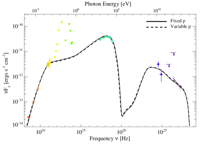
تُعطى توليفة معاملات الإدخال التي نتج عنها أكبر في تشغيل MCMC لدينا في الجدول 11، مع القيمة التي تتنبأ بها هذه التوليفة لكل مرصود في الجدول 11، ويُعرض SED المتنبأ به في الشكل 12. ، فإن نموذجنا يعيد إنتاج معظم خصائص \pwn ضمن من القيم المرصودة، مع انحراف القيمة التي يتنبأ بها النموذج بمقدار عن القيم المرصودة لـ ، وكثافة فيض 327 MHz، وكثافة فيض 4.8 GHz، والدليل الطيفي 4.497.86 GHz. واللافت أن هذا النموذج يعيد بنجاح إنتاج الفيض غير الممتص ودليل الفوتونات المقاسين في كل من نطاقات الأشعة السينية الأربعة، بخلاف كثير من المحاولات السابقة لنمذجة SED لهذا المصدر (مثلًا Tanaka and Takahara 2011; Torres et al. 2014; Hitomi Collaboration et al. 2018). ونشير إلى أننا لم نحاول إعادة إنتاج كثافة فيض IR المرصودة من هذا PWN، لأنه كما وُصف في §2.1، يُرجح أن يكون الانبعاث من الغاز والغبار المحيطين مساهمًا مهمًا في هذا النطاق. وكما يبين الشكل 12، فإن كثافة الفيض المتنبأ بها لانبعاث PWN السنكرتروني في هذا النطاق أدنى بكثير من القيم المرصودة (§2.1؛ الجدول 2). فضلًا عن ذلك، لا توصف مساهمة PWN المتوقعة جيدًا باستقراء بسيط بقانون قدرة لكثافات الفيض الراديوية أو السينية المقاسة.
| Property | Variable | |
|---|---|---|
| Pulsar Age | 1700 years | 1700 years |
| Pulsar Initial Spindown Luminosity | ||
| Mass of Ejecta Swept-up by PWN | 0.85 M⊙ | 0.73 M⊙ |
| PWN Expansion Velocity | ||
| Ejecta Speed just outside PWN | ||
| Pulsar Initial Spin Period | ||
| PWN Magnetic Field Strength |
مع أننا لم نأخذ عينات واسعة من فضاء المعاملات الممكن ولم نحصل على لايقينيات رسمية للمعاملات، كما فُعل لـ G54.1+0.3 (Gelfand et al., 2015)، يمكن استخدام المعاملات “الأكثر أرجحية” المحددة في تحليلنا لاستخلاص معلومات عن تكوّن هذا النظام وفيزيائه الكامنة. وكما يبين الجدول 11، توحي نمذجتنا بأن المستعر الأعظم السلف قذف من المادة بطاقة حركية ابتدائية منخفضة إلى حد ما ، وهي حالة تفضل فيها المحاكيات الحالية للمستعرات العظمى بانهيار اللب تكوين ثقب أسود كتلته نجمية (مثلًا Sukhbold et al. 2016)، لا نجم نيوتروني كما هو مرصود هنا. ومن المهم ملاحظة أننا ركزنا سلاسل MCMC عديدة (تتكون كل منها من عينة) حول انفجار مستعر أعظم معياري بقيمتي و، ولم نتمكن من إعادة إنتاج الخصائص المرصودة لهذا النظام في هذه المنطقة من فضاء المعاملات. ونتيجة لذلك، توحي نمذجتنا بقوة بأن هذا النظام نتج من انفجار مستعر أعظم منخفض الطاقة وعالي الكتلة.
يمكن اختبار هذا الاستنتاج بقياس خصائص مقذوفات المستعر الأعظم. وأفضل سبيل إلى ذلك هو اكتشاف الأشعة السينية الحرارية من المقذوفات المسخنة بالصدمة العكسية. ولسوء الحظ، توحي نتائجنا بأن قدرًا ضئيلًا جدًا من المقذوفات تفاعل مع الصدمة العكسية (§4.3). غير أنه مع تمدد PWN فإنه يكتسح أعمق المقذوفات ويصدمها. وبالنسبة إلى أكثر مجموعة معاملات أرجحية معطاة في الجدول 11، نجد أن PWN اكتسح من المقذوفات، ويتمدد حاليًا (بسرعة أكبر من محيطه بمقدار . ويمكن اختبار هذه التنبؤات بتحليل مستقبلي لانبعاث IR من هذا المصدر.
| Property | PSR J18331034 | PSR J18460258 | PSR B0540-69 | PSR J16404631 |
|---|---|---|---|---|
| Period | msaaCamilo et al. (2006) | msccLivingstone et al. (2011). أدلة الكبح المبلّغ عنها هي القيم المقاسة قبل التغير المرصود وبعده. | msddFerdman et al. (2015) | msffGotthelf et al. (2014) |
| Period-Derivative | aaCamilo et al. (2006) | ccLivingstone et al. (2011). أدلة الكبح المبلّغ عنها هي القيم المقاسة قبل التغير المرصود وبعده. | ddFerdman et al. (2015) | ffGotthelf et al. (2014) |
| Spin-down Luminosity | aaCamilo et al. (2006) | ccLivingstone et al. (2011). أدلة الكبح المبلّغ عنها هي القيم المقاسة قبل التغير المرصود وبعده. | ddFerdman et al. (2015) | ffGotthelf et al. (2014) |
| Characteristic Age | yearsaaCamilo et al. (2006) | yearsccLivingstone et al. (2011). أدلة الكبح المبلّغ عنها هي القيم المقاسة قبل التغير المرصود وبعده. | yearsddFerdman et al. (2015) | yearsffGotthelf et al. (2014) |
| Surface Dipole Magnetic Field | aaCamilo et al. (2006) | ccLivingstone et al. (2011). أدلة الكبح المبلّغ عنها هي القيم المقاسة قبل التغير المرصود وبعده. | ddFerdman et al. (2015) | ffGotthelf et al. (2014) |
| Braking Index | bbدليل الكبح الأول هو القيمة التي تفضلها نمذجتنا لـ PWN (الجدول 11)، أما الثاني فهو القيمة التي أبلغ عنها Roy et al. 2012. | ccLivingstone et al. (2011). أدلة الكبح المبلّغ عنها هي القيم المقاسة قبل التغير المرصود وبعده. | d,ed,efootnotemark: | ggArchibald et al. (2016) |
أول نبّاض له دليل كبح من حل توقيت متصل الطور هو PSR J16404631، وله دليل كبح مقاس (Archibald et al., 2016). وكما يبين الجدول 13، وباستثناء العمر، توجد أوجه تشابه فيزيائية قليلة جدًا بين هذين النبّاضين: فـ PSR J18331034 له دورة أصغر بمقدار من PSR J16404631، ولمعان فقدان دوران أكبر بمقدار ، وشدة مجال مغناطيسي ثنائي القطبية سطحي (مستنتجة من فقدان الدوران) أدنى بمقدار .
إضافة إلى ذلك، توحي نمذجتنا بأن عمر هذا النظام أقل من زمن فقدان الدوران المميز للنبّاض (؛ الجدولان 12 و& 11)، كما اقترح أولًا Camilo et al. (2006). ونتيجة لذلك، فإن لمعان فقدان الدوران الابتدائي الضمني (المعادلة 2) والدورة الابتدائية (مثلًا Pacini and Salvati 1973; Gaensler and Slane 2006 والمراجع الواردة هناك):
| (36) |
قريبان جدًا من قيمتيهما الحاليتين (الجدول 12). والدورة الابتدائية المستمدة للدوران أكبر قليلًا مما تتوقعه نماذج السقوط العكسي على النجم النيوتروني الأولي أثناء المستعر الأعظم بالنظر إلى شدة مجاله المغناطيسي السطحي (مثلًا Watts and Andersson 2002). فضلًا عن ذلك، فإن لمعان فقدان الدوران الابتدائي المستنتج أدنى بعض الشيء من المستمد لأنظمة أخرى (مثلًا Tanaka and Takahara 2011; Torres et al. 2014; Gelfand et al. 2015).
أُجريت تجارب واسعة باستخدام ، لكنها لم تتمكن من إعادة إنتاج الخصائص المرصودة المدرجة في الجدول 10. وقد فُسرت القيم المنخفضة لـ () المستنتجة لـ PWNe أخرى على أنها نتيجة هيمنة إعادة الاتصال المغناطيسي على تسريع الجسيمات عند الطاقات المنخفضة، في حين تهيمن آلية فيرمي عند الطاقات الأعلى (مثلًا Sironi and Spitkovsky 2011). غير أن القيم المطلوبة لـ و (الجدول 11) متسقة كلتاهما مع تسريع فيرمي، وقد يشير اختلافهما إلى أن الجسيمات تُسرّع/تُحقن في موقعين داخل هذا PWN. وإذا صح ذلك، فقد يفسر التباينات المكانية في المرصودة قرب مركز هذا PWN (مثلًا Guest et al. 2019).
أخيرًا، يمكن استخدام نتائج نمذجتنا لتفسير معالم في SED المرصود لهذا PWN (الشكل 12). فالجسيم ذو الطاقة سيولد انبعاثًا سنكرترونيًا بقدرة (مثلًا Pacholczyk 1970):
| (37) |
حيث إن هي شدة المجال المغناطيسي السديمي، و و هما، على التوالي، شحنة الإلكترون وكتلته، بينما هي سرعة الضوء، وسيبلغ طيفه ذروته عند تردد (مثلًا Pacholczyk 1970):
| (38) |
وبالنسبة إلى الجسيمات ذات توزيع طاقة بقانون قدرة ، يُتوقع أيضًا أن يمتلك الانبعاث السنكرتروني طيف قانون قدرة () بحيث:
| (39) | |||||
| (40) |
وسيتسبب هذا الانبعاث السنكرتروني في تبريد جسيم ذي طاقة خلال زمن :
| (41) | |||||
| (42) |
وسيتكوّن كسر في طيف الإلكترونات عند الطاقة التي يساوي عندها زمن التبريد السنكرتروني عمر النظام:
| (43) | |||||
| (44) |
وبالنسبة إلى العمر وشدة المجال المغناطيسي السديمي الحالية اللذين تتنبأ بهما أكثر مجموعة معاملات نموذجية أرجحية لدينا (الجدول 12)، نحصل على:
| (45) |
و ، ، ، ، حيث إن هو ثابت بلانك. وكما نفصل أدناه، نتوقع رؤية معالم في SED المرصود عند جميع هذه الترددات.
عند ، سيهيمن على الانبعاث “جسيمات أثرية” حُقنت في PWN في أزمنة أقدم ثم بردت منذ ذلك الحين (بصورة كظومية أساسًا) إلى طاقات أدنى. ونتيجة لذلك، فإن الطيف “المسطح” (الدليل الطيفي ؛ كثافة الفيض ) المرصود عند ترددات GeV لا يعكس بالضرورة طيف الجسيمات المحقونة. وبدءًا من ، ستكون الجسيمات الباعثة مزيجًا من جسيمات محقونة حديثًا وجسيمات “أثرية”، ونتوقع تغيرًا في () عند هذه النقطة. غير أن عند و، لذلك ستهيمن الجسيمات المحقونة سابقًا في هذا النطاق الطاقي وسيكون الطيف المنبعث “أكثر تسطحًا” مما يُتوقع من الجسيمات المحقونة حديثًا:
| (46) | |||||
| (47) |
وعند طاقة فوتونية ، ينبغي أن يبدأ إشعاع الجسيمات المحقونة حديثًا في الهيمنة على الانبعاث المرصود. ويحدث ذلك داخل المكوّن عالي الطاقة من طيف قانون القدرة المكسور المحقون، وينبغي أن يكون للانبعاث السنكرتروني المرصود:
| (48) | |||||
| (49) |
وبالفعل، فإن المقاس بين keV (حيث تمتلك الجسيمات الباعثة ) مشابه لـ . وعند الطاقات الفوتونية الأعلى، يؤدي زمن التبريد الأقصر إلى انخفاض في العمر المتوسط، وبالتالي في العدد الكلي للجسيمات الباعثة، مما ينتج عنه تليّن (زيادة في ) في الطيف. غير أنه، بسبب تناقص إدخال الطاقة إلى PWN بواسطة النبّاض، فإن كما هو متوقع من النظرية السنكرترونية القياسية (مثلًا Pacholczyk 1970). وفي الواقع، ينجح نموذجنا البسيط لتطور PWN داخل SNR في إعادة إنتاج الطيف المتزايد التليّن في نطاق الأشعة السينية (الشكل 12، الجدول 10). وأخيرًا، نتوقع انبعاثًا سنكرترونيًا ضئيلًا عند ، مما يشير إلى أن \pwn لا ينبغي أن ينتج قدرًا كبيرًا من انبعاث MeV، ومن ثم فهو ليس هدفًا واعدًا لمهمات مقترحة مثل AMEGO.
4.3 قشرة SNR
توحي مورفولوجيا حافة SNR في \pwn بوجود تفاعل مع مادة كثيفة في الشمال. وتبقى القشرة دائرية على نحو لافت إلى أن يحدث تسطح مفاجئ يؤدي إلى سطوع انبعاث الأشعة السينية وتعزز بنى عقدية الشكل (الشكل 1). وتوحي الدراسات الطيفية التي أجراها Guest et al. (2019) بوجود مكوّن حراري غني بالمقذوفات تكون كثافته ، حيث هو عامل ملء غاز الأشعة السينية. ونلاحظ أن هذه القيمة تنطوي على لايقينية إضافية بسبب التركيب غير المعروف للمقذوفات.
بحثنا نموذجًا هيدروديناميكيًا لتطور SNR باستخدام النتائج من §4.2 (الملخصة في الجدول 11) وبافتراض وجود زيادة حادة في الكثافة في مناطق شمال مركز الانفجار. وأُجريت المحاكاة باستخدام شيفرة الهيدروديناميك الشبكية VH1 (انظر Blondin et al. 2001; Kolb et al. 2017)، التي تستخدم طريقة PPMLR (Colella and Woodward, 1984) لحل انتشار الصدمة. وقد أهملنا هنا مساهمات النبّاض لأن PWN لا يؤثر في مورفولوجيا SNR في هذه المرحلة من التطور. وشغّلنا المحاكاة حتى عمر 1700 سنة (انظر §4.2)، مع تعديل موضع قفزة الكثافة ومقدارها بالنسبة إلى مركز الانفجار إلى أن أعادت المورفولوجيا المرصودة إنتاج تلك المرصودة لـ\pwn.
نجد أنه يمكن الحصول على تمثيل معقول لمورفولوجيا SNR بوجود قفزة في الكثافة بعامل تقع على بعد pc شمال مركز الانفجار. وتُلخص النتائج في الشكل 13، حيث نرسم توزيع الكثافة من المحاكاة. ويمثل الحد الخارجي الكثافة المحيطة، وتُشار مواضع الصدمة الأمامية (FS)، والصدمة العكسية (RS)، وعدم الاستمرارية التلامسية (CD). وتقع كثافة الذروة في المناطق الشمالية من SNR في المقذوفات المصدومة عكسيًا، حيث ()، وهو ما يتفق على نحو معقول مع تقدير كثافة العقدة الشمالية. ومع أن هذا الحل بعيد عن أن يكون فريدًا، فإنه يقدم تفسيرًا معقولًا للشروط الأساسية المؤدية إلى الخصائص المرصودة لـ SNR. ونلاحظ أنه، كما هو متوقع، لا تزال RS (التي يُركّب كنتورها الخارجي باللون الأبيض) بعيدة عن حد PWN ()، بما يتسق مع استنتاجنا في §4.2 بأن أي تفاعل RS/PWN لم يحدث.
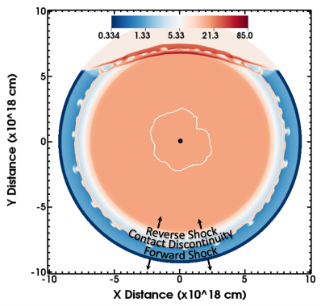
5 الملخص والاستنتاجات
تحليل أرصاد أرشيفية في IR (Herschel, Spitzer؛ §2.1) وفي الأشعة السينية (Chandra، NuSTAR، Hitomi؛ §3.1) لـ PWN \pwn. وتشير المورفولوجيا المتشابهة المرصودة في خرائط خطوط انبعاث IR والاستمرارية لهذا المصدر إلى أن الغبار والغاز المحيطين ينتجان معظم الإشعاع المرصود (§4.1). ويبين تحليلنا لأرصاد الأشعة السينية أنه، مع وجود تليّن طيفي إجمالي داخل هذا النطاق، فإن قيم معاملات قانون القدرة المتباينة من كواشف مختلفة تشير إلى ضرورة أخذ اللايقينيات الأداتية في الحسبان عند تفسير القيم (§3.3).
ولتكميم درجة التليّن الطيفي وشكله في نطاق الأشعة السينية، لاءمنا قوانين قدرة على نحو منفصل عبر نطاقات طاقة متميزة (ملاءمات قانون القدرة القطعي §3.2)، بدل الملاءمة عبر كامل مجال طاقة الكاشف بقانون قدرة مكسور واحد. ويتسق هذا الشكل مع ما تتنبأ به نماذج تطور PWN داخل SNR، التي تجد أن الحقن المستمر للجسيمات في PWN وتغير شدة المجال المغناطيسي داخله لا يؤديان إلى كسر حاد كما تتطلب نماذج قانون القدرة المكسور.
ثم استخدمنا نموذجًا أحادي المنطقة لتطور PWN داخل SNR لإعادة إنتاج الخصائص الديناميكية والطيفية عريضة النطاق المرصودة لـ\pwn، مع أخذ أن انبعاث IR على الأرجح لا تهيمن عليه الأشعة السنكرترونية من الجسيمات داخل PWN، ومع أخذ اللايقينية المتزايدة في طيف الأشعة السينية الناتجة من مقارنتنا بين أدوات مختلفة في الاعتبار (§4.2). ووجدنا أن هذا النموذج يستطيع إعادة إنتاج خصائص هذا المصدر، لكن فقط إذا كانت لمقذوفات المستعر الأعظم طاقة حركية ابتدائية منخفضة قدرها كان طيف الجسيمات المحقونة في PWN عند صدمة الإنهاء ألين عند الطاقات المنخفضة منه عند الطاقات العالية ، وهو عكس ما يُرصد في معظم PWNe الأخرى. وتتسق كلتا القيمتين مع المتوقع من تسارع الصدمة الانتشاري، مما يوحي بأن إعادة الاتصال المغناطيسي قد لا تؤدي دورًا مهمًا في تسريع الجسيمات في هذا PWN، وقد تشير القيم المختلفة إلى موقعي تسريع مختلفين. علاوة على ذلك، استخدمنا نموذجًا هيدروديناميكيًا لتحديد بنية الوسط المحيط اللازمة لإعادة إنتاج مورفولوجيا قشرة SNR المرصودة (§4.3). ونستطيع تحقيق ذلك إذا وُجدت زيادة في الكثافة قدرها على بعد pc شمال مركز الانفجار.
ونتيجة لذلك، حصلنا على صورة شاملة للمستعر الأعظم، والنجم النيوتروني، ورياح النبّاض، والمادة المحيطة بهذا المصدر. والخصائص المستمدة مفيدة لفهم كيفية تكوّن النجوم النيوترونية في المستعرات العظمى بانهيار اللب، والطرائق المختلفة التي تنشّط بها بيئتها. وقد تكون التقنيات والأدوات المقدمة في هذه الدراسة قابلة للتطبيق عند تحليل كثير من PWNe الأخرى، وقد يتيح استخدامها رؤية أكثر شمولًا للآليات المختلفة التي تتشكل بها النجوم النيوترونية وتنتج بعضًا من أعلى الجسيمات طاقة في الكون.
Appendix A الأخطاء النظامية في طيف NuSTAR
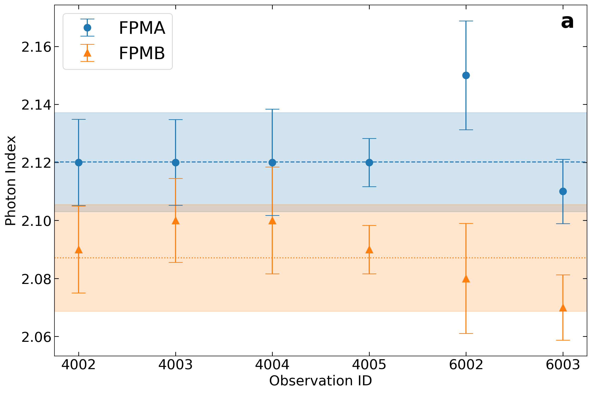
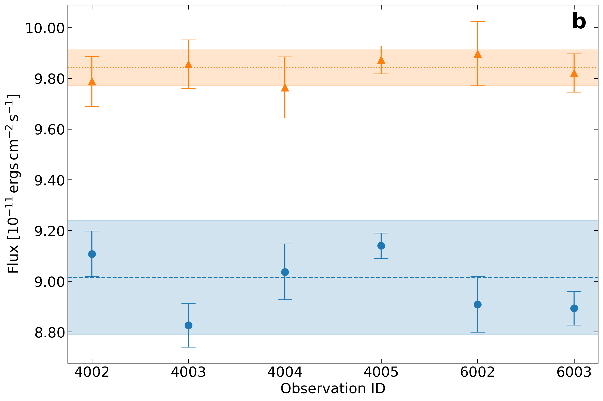
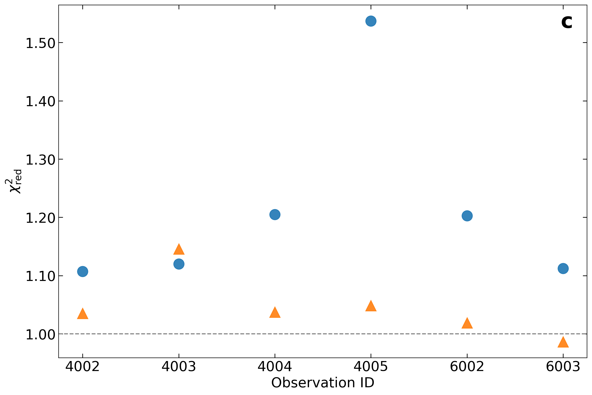
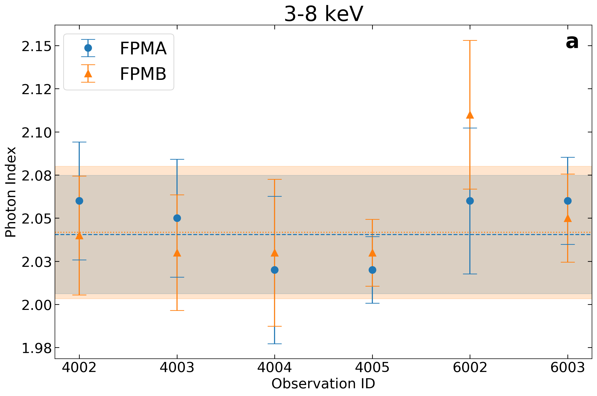
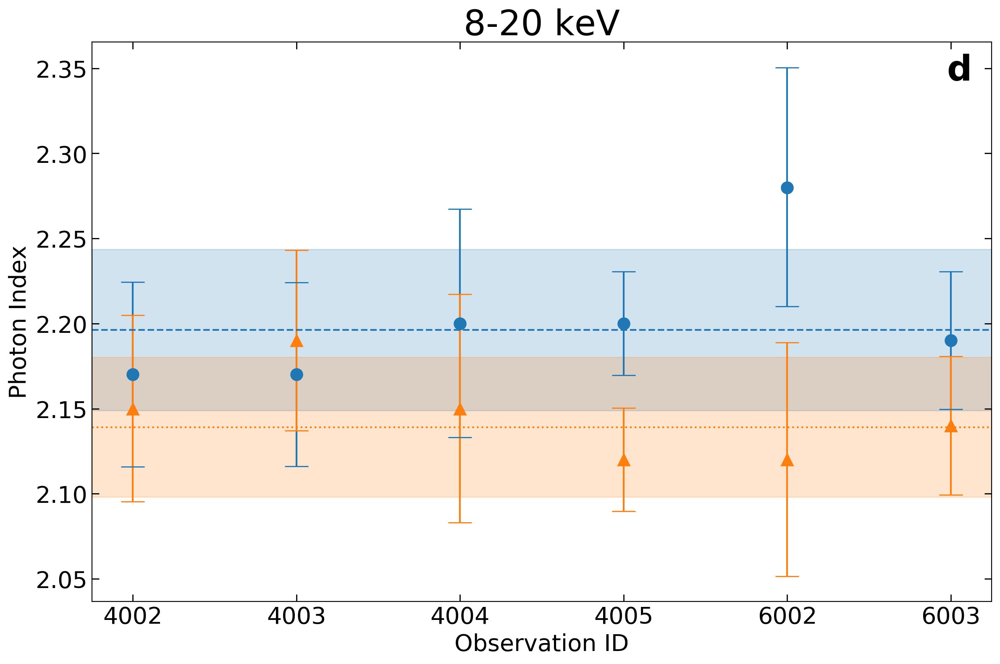
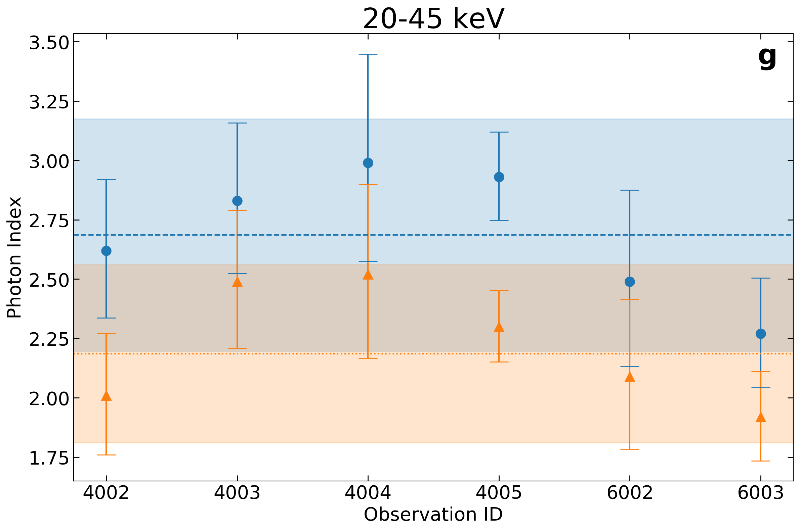
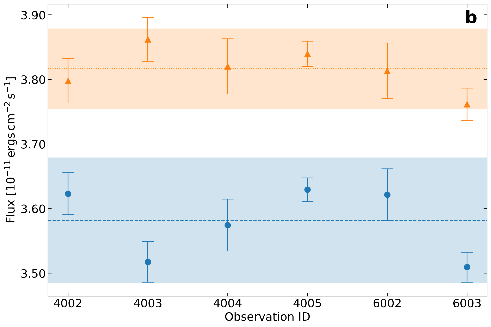
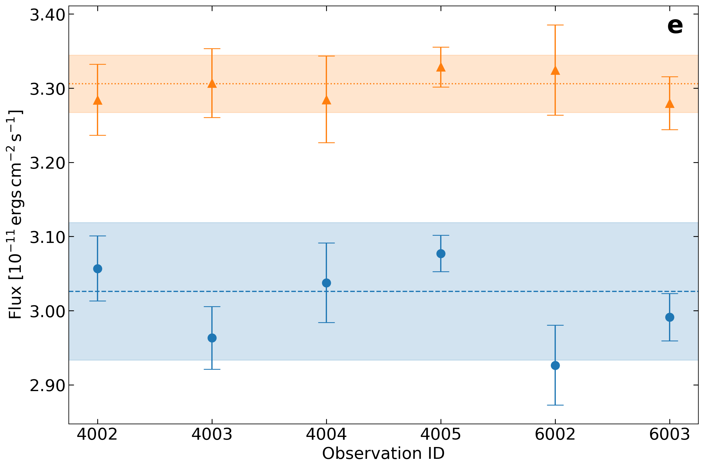
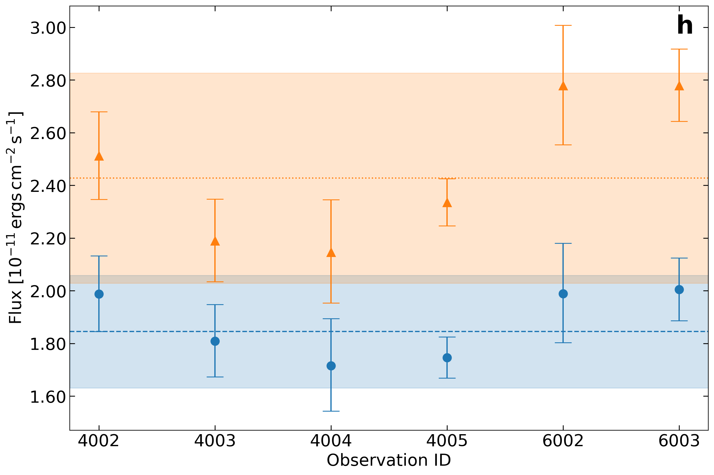
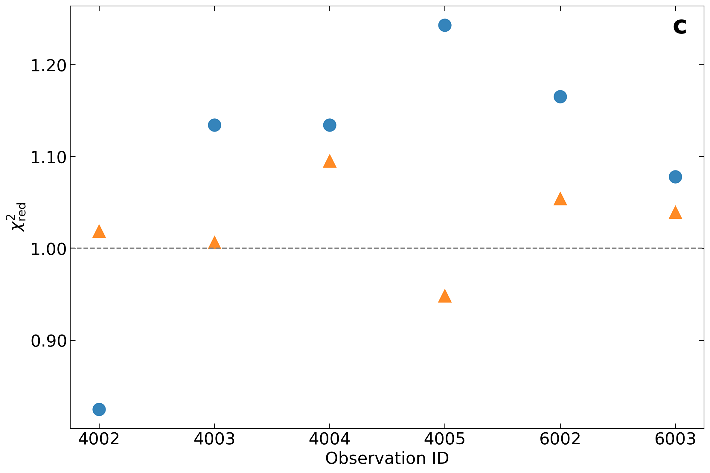
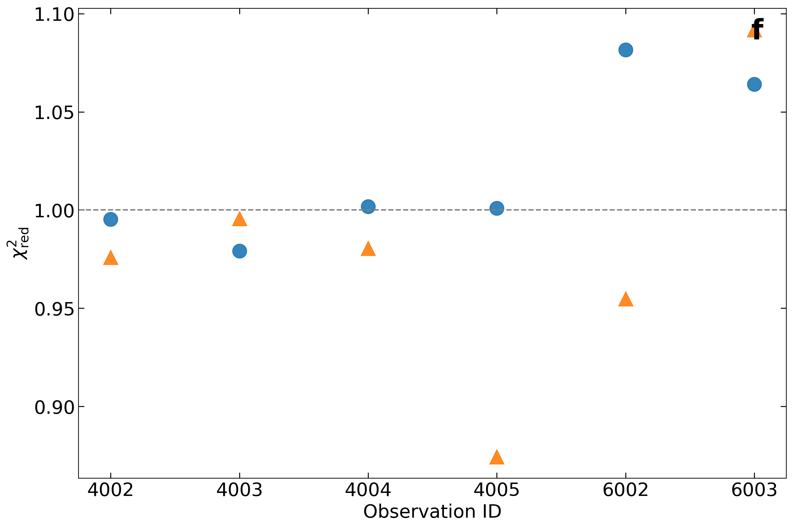
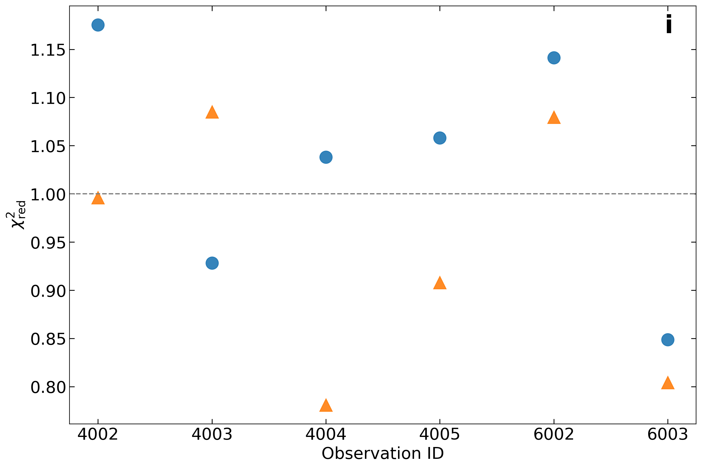
نناقش هنا الفروق النظامية بين أطياف FPMA وFPMB. في البداية لاءمنا أطياف NuSTAR الاثني عشر كلها بصورة مستقلة عبر كامل مجال 3–45 keV من دون تقسيم مجالات الطاقة (الشكل 14)، باستخدام النموذج ذي مكوّن الجسم الأسود للنبّاض (الموضح في §3.1). ومع أننا لاءمنا أيضًا النموذج من دون مكوّن الجسم الأسود للنبّاض وحصلنا على نتائج مشابهة، فإننا نورد هنا فقط نتائج ملاءمة النموذج ذي مكوّن الجسم الأسود للنبّاض، لأننا نحاول ببساطة إبراز الفروق بين أطياف FPMA وFPMB.
وجدنا أن دليل الفوتونات كان أعلى باستمرار في أطياف FPMA مقارنة بأطياف FPMB، مما يدل على أن أطياف FPMA كانت ألين (أي إن حصة فوتونات الأشعة السينية الأعلى طاقة أقل). وكان المتوسط الموزون (بوزن معكوس التباين)، عبر الأرصاد، لدليل الفوتونات لأطياف FPMA هو ، وكان المتوسط الموزون لدليل الفوتونات لأطياف FPMB هو . واللايقينيات المبلّغ عنها هنا هي الانحرافات المعيارية الموزونة للعينة المحسوبة بالصيغة ، حيث ، و هو المتوسط الموزون، و (عدد الأرصاد) في حالتنا. والانحراف المعياري لكل دليل فوتونات يقع ضمن ما ذُكر بوصفه خطأ التكرارية التقريبي للميل الطيفي () في ورقة معايرة NuSTAR (Madsen et al., 2015)، مما يدل على أن التباين عبر الأرصاد المختلفة من كل FPM يقع ضمن لايقينية المعايرة. ومع أن Madsen et al. (2015) أبلغوا عن إزاحات قدرها بين و للمصدر 3C273 خلال بعض أرصاد حملة المعايرة المتقاطعة، فإنهم لا يتناولون كون أعلى باستمرار من ، وهو ما نرصده في \pwn. ويلاحظون فعلًا أنه إذا كانت نسبة الإشارة إلى الضجيج عالية بما يكفي، كما قد تكون الحال لمصدر ساطع مثل \pwn، فقد تكون فروق الميل بين الأدوات FPMA وFPMB مهمة.
إضافة إلى التباين في أدلة الفوتونات بين أطياف FPMA وFPMB، تختلف أيضًا قيم الفيض غير الممتص في مجال 3–45 keV. وبوحدات erg s-1 cm-2 ، نحصل على و. وتختلف قيمتا متوسط الفيض الموزون بمقدار ، وهو أكبر قليلًا من فرق الفيض المحتمل المذكور في ورقة معايرة NuSTAR (Madsen et al., 2015). ونجد أن الفيض غير الممتص لأطياف FPMB أعلى باستمرار من ذلك الخاص بأطياف FPMA. وكما في حالة دليل الفوتونات، قد يكون هذا الانزياح الثابت بسبب سطوع \pwn.
ثم كررنا التحليل أعلاه على كل نطاق طاقة: 3–8 keV و8–20 keV و20–45 keV (الشكل 15). وتتفق أدلة الفوتونات في نطاق 3–8 keV ولا يوجد انزياح ثابت. غير أنه، مع أن فواصل الثقة 90% تتداخل لنطاقي 8–20 keV و20–45 keV، فإننا نرى في معظم الحالات أن أعلى من . وبالنسبة إلى الفيض غير الممتص، نرى أن القيمة أعلى باستمرار لأطياف FPMB مقارنة بأطياف FPMA في جميع نطاقات الطاقة. ولا تتداخل فواصل الثقة 90% للفيض غير الممتص في نطاقي 3–8 keV و8–20 keV، وتتداخل قليلًا في نطاق 20–45 keV بسبب الانتشار الكبير لقيم أطياف FPMB.
ومع وجود تباينات في قيم دليل الفوتونات والفيض غير الممتص لـ PWN بين الأطياف من FPMA وFPMB، فإن نتائج الملاءمة بين الأطياف من FPM نفسه عبر أرصاد مختلفة تقع ضمن لايقينية المعايرة. لذلك نرى أن النهج المناسب هو إجراء ملاءات مشتركة لأطياف كل FPM على حدة.
References
- The Second Fermi Large Area Telescope Catalog of Gamma-Ray Pulsars. ApJS 208 (2), pp. 17. External Links: Document, 1305.4385 Cited by: item 4.
- 3FHL: The Third Catalog of Hard Fermi-LAT Sources. ApJS 232 (2), pp. 18. External Links: Document, 1702.00664 Cited by: Table 10.
- Surveys of the galactic plane at 1.414, 2.695 and 5.000 GHz. A&AS 1 (3), pp. 319–355. Cited by: §1.
- The theory of pulsar wind nebulae: recent progress. External Links: 2001.04442 Cited by: §1.
- A High Braking Index for a Pulsar. ApJ 819 (1), pp. L16. External Links: Document, 1603.00305 Cited by: §4.2, Table 13.
- XSPEC: The First Ten Years. In Astronomical Data Analysis Software and Systems V, G. H. Jacoby and J. Barnes (Eds.), Astronomical Society of the Pacific Conference Series, Vol. 101, pp. 17. Cited by: الخصائص غير القياسية لسديم رياح نبّاض “قياسي”: كشف أسرار سديم رياح النبّاض \pwn باستخدام انبعاثه في الأشعة تحت الحمراء والأشعة السينية, §3.1.
- Theory of pulsar winds. Advances in Space Research 33 (4), pp. 466–474. External Links: Document Cited by: §1.
- On Super-novae. Proceedings of the National Academy of Science 20 (5), pp. 254–259. External Links: Document Cited by: §1.
- High resolution X-ray and radio images of the Crab-Like supernova remnant G 21.5-0.9.. ApJ 248, pp. L23–L26. External Links: Document Cited by: §1.
- Expanded Very Large Array Observations of Galactic Supernova Remnants: Wide-field Continuum and Spectral-index Imaging. ApJ 739 (1), pp. L20. External Links: Document, 1106.2796 Cited by: Table 10.
- The expansion and radio spectral index of G21.5-0.9: is PSR J1833-1034 the youngest pulsar?. MNRAS 386 (3), pp. 1411–1416. External Links: Document, 0802.0152 Cited by: Table 10.
- The deepest radio study of the pulsar wind nebula G21.5-0.9: still no evidence for the supernova shell. MNRAS 412 (2), pp. 1221–1228. External Links: Document, 1008.1793 Cited by: Table 10.
- Pulsar Wind Nebulae in Evolved Supernova Remnants. ApJ 563 (2), pp. 806–815. External Links: Document, astro-ph/0107076 Cited by: §4.3.
- The Crab-like Supernova Remnant G21.5-0.9 at Millimeter Wavelengths. ApJ 561 (2), pp. L203–L206. External Links: Document, astro-ph/0110128 Cited by: Table 10.
- PSR J1833-1034: Discovery of the Central Young Pulsar in the Supernova Remnant G21.5-0.9. ApJ 637 (1), pp. 456–465. External Links: Document, astro-ph/0509823 Cited by: §1, §4.2, Table 10, Table 13.
- Parameter estimation in astronomy through application of the likelihood ratio.. ApJ 228, pp. 939–947. External Links: Document Cited by: §3.1.
- Young Core-Collapse Supernova Remnants and Their Supernovae. ApJ 619 (2), pp. 839–855. External Links: Document, astro-ph/0409013 Cited by: §1, item 1.
- The Piecewise Parabolic Method (PPM) for Gas-Dynamical Simulations. Journal of Computational Physics 54, pp. 174–201. External Links: Document Cited by: §4.3.
- Developing Sherpa with Python. In Astronomical Data Analysis Software and Systems XVI, R. A. Shaw, F. Hill, and D. J. Bell (Eds.), Astronomical Society of the Pacific Conference Series, Vol. 376, pp. 543. Cited by: الخصائص غير القياسية لسديم رياح نبّاض “قياسي”: كشف أسرار سديم رياح النبّاض \pwn باستخدام انبعاثه في الأشعة تحت الحمراء والأشعة السينية, §2.2.
- Long-term Timing and Emission Behavior of the Young Crab-like Pulsar PSR B0540-69. ApJ 812 (2), pp. 95. External Links: Document, 1506.00182 Cited by: Table 13.
- The Temperature of the Cosmic Microwave Background. ApJ 707 (2), pp. 916–920. External Links: Document, 0911.1955 Cited by: item 6.
- Sherpa: a mission-independent data analysis application. In Astronomical Data Analysis, J. Starck and F. D. Murtagh (Eds.), Society of Photo-Optical Instrumentation Engineers (SPIE) Conference Series, Vol. 4477, pp. 76–87. External Links: Document, astro-ph/0108426 Cited by: الخصائص غير القياسية لسديم رياح نبّاض “قياسي”: كشف أسرار سديم رياح النبّاض \pwn باستخدام انبعاثه في الأشعة تحت الحمراء والأشعة السينية, §2.2.
- CIAO: Chandra’s data analysis system. In Society of Photo-Optical Instrumentation Engineers (SPIE) Conference Series, Society of Photo-Optical Instrumentation Engineers (SPIE) Conference Series, Vol. 6270, pp. 62701V. External Links: Document Cited by: الخصائص غير القياسية لسديم رياح نبّاض “قياسي”: كشف أسرار سديم رياح النبّاض \pwn باستخدام انبعاثه في الأشعة تحت الحمراء والأشعة السينية, §2.2.
- The Evolution and Structure of Pulsar Wind Nebulae. ARA&A 44 (1), pp. 17–47. External Links: Document, astro-ph/0601081 Cited by: §1, §4.2.
- Infrared observations of plerionic supernovae remnants: high-energy astrophysics with ISO. In The Universe as Seen by ISO, P. Cox and M. Kessler (Eds.), ESA Special Publication, Vol. 427, pp. 313. Cited by: §1.
- The Progenitor and Pulsar Birth Properties of Composite SNR Kes 75. In The Fast and the Furious: Energetic Phenomena in Isolated Neutron Stars, Pulsar Wind Nebulae and Supernova Remnants, J. -U. Ness (Ed.), pp. 24. Cited by: §4.2.
- The Properties of the Progenitor Supernova, Pulsar Wind, and Neutron Star inside PWN G54.1+0.3. ApJ 807 (1), pp. 30. External Links: Document, 1508.01355 Cited by: item 3, §4.2, §4.2, §4.2, §4.2.
- A Dynamical Model for the Evolution of a Pulsar Wind Nebula Inside a Nonradiative Supernova Remnant. ApJ 703 (2), pp. 2051–2067. External Links: Document, 0904.4053 Cited by: §3.2, item 6, §4.2.
- Radiative Models of Pulsar Wind Nebulae. In Modelling Pulsar Wind Nebulae, D. F. Torres (Ed.), Astrophysics and Space Science Library, Vol. 446, pp. 161. External Links: Document Cited by: §1, item 1, §4.2.
- Ensemble samplers with affine invariance. Communications in Applied Mathematics and Computational Science 5 (1), pp. 65–80. External Links: Document Cited by: §3.1.
- NuSTAR Discovery of a Young, Energetic Pulsar Associated with the Luminous Gamma-Ray Source HESS J1640-465. ApJ 788 (2), pp. 155. External Links: Document, 1405.0465 Cited by: §4.2, Table 13.
- The deepest Chandra X-ray study of the plerionic supernova remnant G21.5-0.9. MNRAS 482 (1), pp. 1031–1042. External Links: Document, 1810.01461 Cited by: §1, §3.1, §3.1, Table 5, §3, §4.2, §4.3, Table 10.
- The H.E.S.S. Galactic plane survey. A&A 612, pp. A1. External Links: Document, 1804.02432 Cited by: Table 10.
- The Nuclear Spectroscopic Telescope Array (NuSTAR) High-energy X-Ray Mission. ApJ 770 (2), pp. 103. External Links: Document, 1301.7307 Cited by: §2.3.
- Hitomi X-ray observation of the pulsar wind nebula G21.5-0.9. PASJ 70 (3), pp. 38. External Links: Document, 1802.05068 Cited by: Table 1, §1, §2.4, §4.1, §4.2.
- Matplotlib: a 2d graphics environment. Computing in Science & Engineering 9 (3), pp. 90–95. External Links: Document Cited by: الخصائص غير القياسية لسديم رياح نبّاض “قياسي”: كشف أسرار سديم رياح النبّاض \pwn باستخدام انبعاثه في الأشعة تحت الحمراء والأشعة السينية.
- New Features of SAOImage DS9. In Astronomical Data Analysis Software and Systems XII, H. E. Payne, R. I. Jedrzejewski, and R. N. Hook (Eds.), Astronomical Society of the Pacific Conference Series, Vol. 295, pp. 489. Cited by: الخصائص غير القياسية لسديم رياح نبّاض “قياسي”: كشف أسرار سديم رياح النبّاض \pwn باستخدام انبعاثه في الأشعة تحت الحمراء والأشعة السينية, §2.2.
- Measuring Timing Properties of PSR B0540-069. Journal of Korean Astronomical Society 52 (2), pp. 41–47. External Links: Document, 1903.01107 Cited by: Table 13.
- Evolution of a Pulsar Wind Nebula within a Composite Supernova Remnant. ApJ 844 (1), pp. 1. External Links: Document, 1707.06352 Cited by: §4.3.
- Infrared Supernova Remnants and their Infrared-to-X-ray Flux Ratios. ApJ 821 (1), pp. 20. External Links: Document, 1602.03955 Cited by: §4.1.
- Post-outburst Observations of the Magnetically Active Pulsar J1846-0258. A New Braking Index, Increased Timing Noise, and Radiative Recovery. ApJ 730 (2), pp. 66. External Links: Document, 1007.2829 Cited by: Table 13.
- NuSTAR low energy effective area correction due to thermal blanket tear. External Links: 2005.00569 Cited by: §3.2.
- Calibration of the NuSTAR High-energy Focusing X-ray Telescope.. ApJS 220 (1), pp. 8. External Links: Document, 1504.01672 Cited by: Appendix A, Appendix A.
- A New, Low Braking Index for the LMC Pulsar B0540-69. ApJ 827 (2), pp. L39. External Links: Document, 1608.01901 Cited by: Table 13.
- Time-dependent modelling of pulsar wind nebulae: study on the impact of the diffusion-loss approximations. MNRAS 427 (1), pp. 415–427. External Links: Document, 1209.0300 Cited by: item 6.
- The Plerionic Supernova Remnant G21.5-0.9 Powered by PSR J1833-1034: New Spectroscopic and Imaging Results Revealed with the Chandra X-ray Observatory. ApJ 724 (1), pp. 572–587. External Links: Document, 1008.1794 Cited by: Figure 1, Table 10.
- Monte-Carlo: In the Beginning and Some Great Expectations. In Lecture Notes in Physics, Berlin Springer Verlag, R. Alcouffe, R. Dautray, A. Forster, G. Ledonois, and B. Mercier (Eds.), Vol. 240, pp. 62. External Links: Document Cited by: §4.2.
- In-orbit performance of the soft X-ray imaging system aboard Hitomi (ASTRO-H). PASJ 70 (2), pp. 21. External Links: Document, 1709.08829 Cited by: §2.4.
- HEAsoft: Unified Release of FTOOLS and XANADU. External Links: 1408.004 Cited by: الخصائص غير القياسية لسديم رياح نبّاض “قياسي”: كشف أسرار سديم رياح النبّاض \pwn باستخدام انبعاثه في الأشعة تحت الحمراء والأشعة السينية, §2.3.
- NuSTAR Study of Hard X-Ray Morphology and Spectroscopy of PWN G21.5-0.9. ApJ 789 (1), pp. 72. External Links: Document, 1405.3239 Cited by: Table 1, §1, §2.3.
- A guide to numpy. Vol. 1, Trelgol Publishing USA. Cited by: §5.
- The Herschel Data Processing System — HIPE and Pipelines — Up and Running Since the Start of the Mission. In Astronomical Data Analysis Software and Systems XIX, Y. Mizumoto, K. -I. Morita, and M. Ohishi (Eds.), Astronomical Society of the Pacific Conference Series, Vol. 434, pp. 139. External Links: 1011.1209 Cited by: الخصائص غير القياسية لسديم رياح نبّاض “قياسي”: كشف أسرار سديم رياح النبّاض \pwn باستخدام انبعاثه في الأشعة تحت الحمراء والأشعة السينية, §2.1.
- Radio astrophysics. Nonthermal processes in galactic and extragalactic sources. Cited by: §4.2, §4.2.
- On the Evolution of Supernova Remnants. Evolution of the Magnetic Field, Particles, Content, and Luminosity. ApJ 186, pp. 249–266. External Links: Document Cited by: §4.2.
- Planck intermediate results. XXXI. Microwave survey of Galactic supernova remnants. A&A 586, pp. A134. External Links: Document, 1409.5746 Cited by: Table 10.
- The Photodetector Array Camera and Spectrometer (PACS) on the Herschel Space Observatory. A&A 518, pp. L2. External Links: Document, 1005.1487 Cited by: §2.1.
- Revised Distances to 21 Supernova Remnants. AJ 155 (5), pp. 204. External Links: Document, 1808.09082 Cited by: §4.2, Table 10.
- Evolution of pulsar-driven supernova remnants.. ApJ 278, pp. 630–648. External Links: Document Cited by: §1.
- Observations of four glitches in the young pulsar J1833-1034 and study of its glitch activity. MNRAS 424 (3), pp. 2213–2221. External Links: Document, 1205.6264 Cited by: Table 13.
- Observations at 90 and 142 GHz of nine extended galactic radio sources.. A&A 225, pp. 167–178. Cited by: Table 10.
- 84 Gigahertz Observations of Five Crab-like Supernova Remnants. ApJ 338, pp. 171. External Links: Document Cited by: Table 10.
- The Maximum Energy of Accelerated Particles in Relativistic Collisionless Shocks. ApJ 771 (1), pp. 54. External Links: Document, 1301.5333 Cited by: §1.
- Acceleration of Particles at the Termination Shock of a Relativistic Striped Wind. ApJ 741 (1), pp. 39. External Links: Document, 1107.0977 Cited by: §4.2.
- Pulsar Wind Nebulae. In Handbook of Supernovae, A. W. Alsabti and P. Murdin (Eds.), pp. 2159. External Links: Document Cited by: §1, §4.2.
- SAOImage DS9: A utility for displaying astronomical images in the X11 window environment. External Links: 0003.002 Cited by: الخصائص غير القياسية لسديم رياح نبّاض “قياسي”: كشف أسرار سديم رياح النبّاض \pwn باستخدام انبعاثه في الأشعة تحت الحمراء والأشعة السينية, §2.2.
- Core-collapse Supernovae from 9 to 120 Solar Masses Based on Neutrino-powered Explosions. ApJ 821 (1), pp. 38. External Links: Document, 1510.04643 Cited by: §4.2.
- A Sino-German 6 cm polarization survey of the Galactic plane. VII. Small supernova remnants. A&A 536, pp. A83. External Links: Document, 1110.1106 Cited by: Table 10.
- The ASTRO-H (Hitomi) x-ray astronomy satellite. In Proceedings of the SPIE, Volume 9905, id. 99050U 17 pp. (2016)., Society of Photo-Optical Instrumentation Engineers (SPIE) Conference Series, Vol. 9905, pp. 99050U. External Links: Document Cited by: §2.4.
- The ASTRO-H X-ray astronomy satellite. In Proc. SPIE, Society of Photo-Optical Instrumentation Engineers (SPIE) Conference Series, Vol. 9144, pp. 914425. External Links: Document, 1412.1356 Cited by: §2.4.
- Study of Four Young TeV Pulsar Wind Nebulae with a Spectral Evolution Model. ApJ 741 (1), pp. 40. External Links: Document, 1108.1690 Cited by: §1, §4.2, §4.2.
- Time-dependent modeling of TeV-detected, young pulsar wind nebulae. Journal of High Energy Astrophysics 1, pp. 31–62. External Links: Document, 1402.5485 Cited by: §1, §3.2, §4.1, §4.2, §4.2.
- Modelling Pulsar Wind Nebulae. Vol. 446. External Links: Document Cited by: §1.
- The numpy array: a structure for efficient numerical computation. Computing in Science & Engineering 13 (2), pp. 22. Cited by: §5.
- SciPy 1.0: Fundamental Algorithms for Scientific Computing in Python. Nature Methods 17, pp. 261–272. External Links: Document Cited by: §5.
- The braking index of PSR B0540-69 and the associated pulsar wind nebula emission after spin-down rate transition. MNRAS 494 (2), pp. 1865–1870. External Links: Document, 2003.08538 Cited by: Table 13.
- The spin evolution of nascent neutron stars. MNRAS 333 (4), pp. 943–951. External Links: Document, astro-ph/0110573 Cited by: §4.2.
- NuSTAR Observations of the Bullet Cluster: Constraints on Inverse Compton Emission. ApJ 792 (1), pp. 48. External Links: Document, 1403.2722 Cited by: §2.3.
- On the Absorption of X-Rays in the Interstellar Medium. ApJ 542 (2), pp. 914–924. External Links: Document, astro-ph/0008425 Cited by: §3.1.
- A Comparison of Radio Recombination-Line Results and Continuum Spectral Indices for Galactic Sources. Astrophys. Lett. 5, pp. 47–51. Cited by: §1.
- Long-term X-Ray Variability of Typical Active Galactic Nuclei in the Distant Universe. ApJ 831 (2), pp. 145. External Links: Document, 1608.08224 Cited by: §3.1.